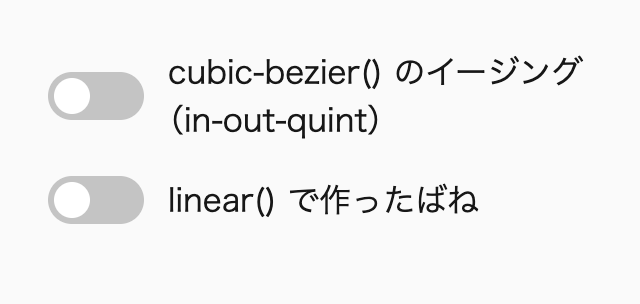
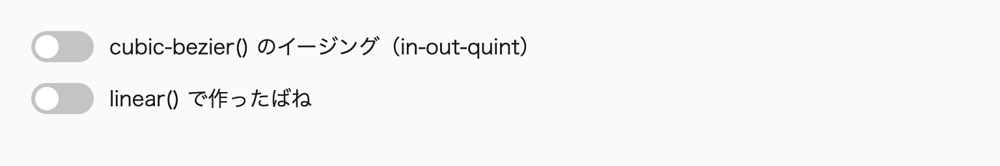
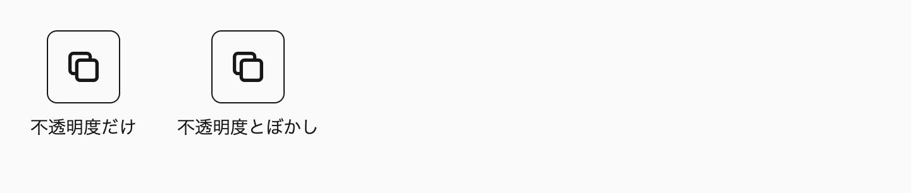
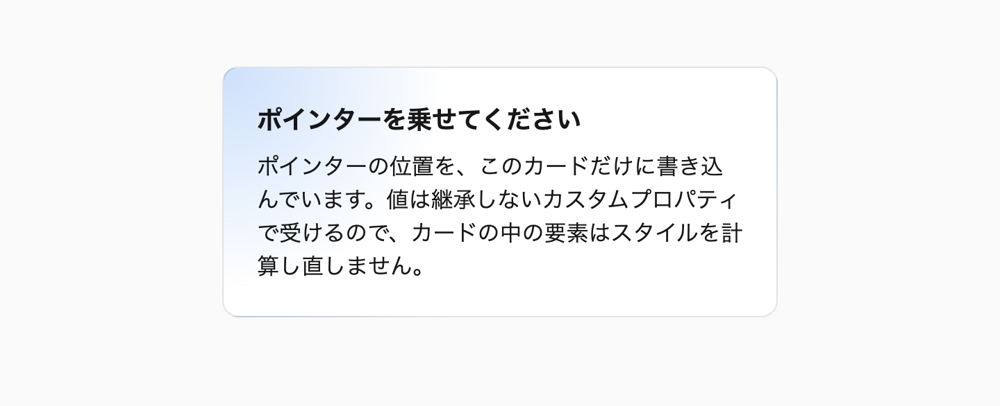
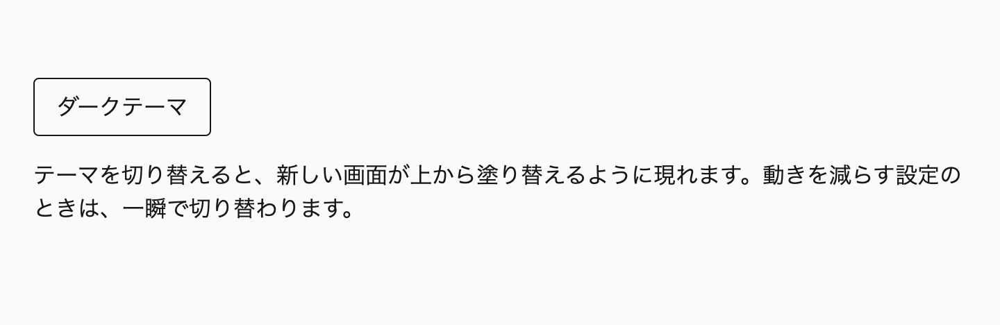
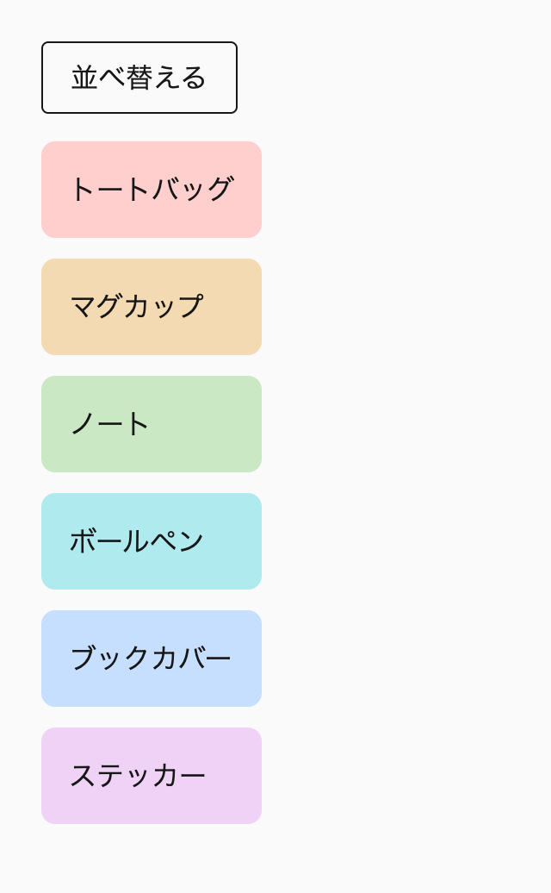
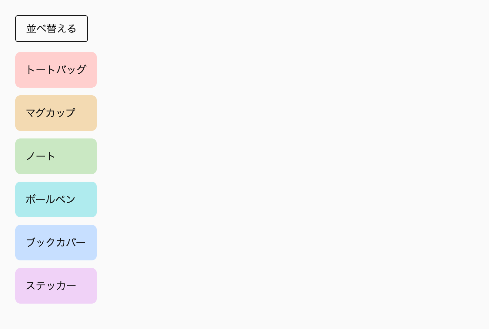

この章では、UIの動きをCSSで書く方法を扱います。動かすかどうかの判断から始め、動きを減らす設定への対応、イージングと再生時間の選び方、トランジションと @keyframes の書き分けを説明します。そのあと、要素の出現と退場、スクロールに合わせた動き、描画の負荷、View Transitionsによる画面の切り替えを扱います。
動きは、状態の変化や操作の結果を伝える手段です。うまく使えば、何が起きたのかが分かりやすくなります。一方で、毎日のように繰り返し触るUIに装飾的な動きを足すと、待ち時間が増えるだけです。動きを減らす設定をしているユーザーにとっては、めまいや吐き気の原因にもなります。そのため本書では、動きを足す前に目的を確かめ、動かすと決めたものだけを、決まった手順で実装します。
この章の節は、動きを足すときに確かめる順番で並べています。まず目的があるかを判断し（18-1）、動きを減らす設定でどう見せるかを決め（18-2）、イージングと再生時間を選びます（18-3）。そのうえで実装の手段を選び（18-4〜18-6、18-8）、最後に描画の負荷を確かめます（18-7）。レビューで動きを確かめるときも、この順番で見ていきます。
私自身、以前は動きを減らす設定に、全称セレクタと !important で全体の動きを止めるCSSで対応していました。これでは、状態の変化を伝えるフェードまで消えてしまいます。いまは動きを種類ごとに分け、止めるもの、フェードにするもの、短くするもの、そのまま残すものを選んでいます。
この章を読むと、動きを足す前に、その動きが状態の変化や操作の結果を伝えるものか、どのくらいの頻度で見られるものかを確かめ、入れるかどうかを決められるようになります。動きを減らす設定に対しては、止めるか、フェードにするか、短くするか、そのまま残すかを動きの種類ごとに選べます。実装の手段は、トランジションと @keyframes、@starting-style、スクロール駆動アニメーション、View Transitionsから選べます。描画の負荷も、レイアウト、ペイント、合成のどれが起きるかから見積もれます。
この章は次の8つの節で構成しています。
transform-origin と拡大の起点、押したときの縮小、ばねの linear()@keyframes の命名と設計、動きの中断@starting-style と transition-behavior、ダイアログ、ポップオーバー、<details> の開閉、ツールチップの遅延view() のタイムラインとスタイルクエリで一度だけ再生する演出、IntersectionObserver と data-motion-modewill-change、contain、filter と backdrop-filterview-transition-name と view-transition-class の付け方、名前の重複の注意点キーボード操作のフォーカスに動きを付けない書き方は、「17-1 ホバーとフォーカスを表す」で扱います※1。イージングと再生時間のトークンの定義は「10-4 デザイントークン（巻2）」で、変形の個別プロパティは「9-7 モダンな記法にそろえる（巻2）」で扱います。この章のコード例では、説明に関係しない @layer の記述を省略しています。デモのCSSには省略せずに書いています。
初めて読むときは、「18-1 動かすかどうかを決める」「18-2 動きを減らす設定に対応する」を読みます。18-3以降は、実際に動きを付けるときに読んでください。
次のルールを先に押さえ、ほかのルールは、該当する場面で付録A「ルール一覧（巻3）」から引けば足ります。
motion-needs-purpose：アニメーションを足す前に目的があるかを確かめ、目的のない動きは入れません。motion-only-with-no-preference：装飾的な動きのうちフェード以外は、@media (prefers-reduced-motion: no-preference) の中で指定します。simplify-large-motion-when-reduced：機能的な動きでも大きな変動は、動きを減らす設定でフェードに置き換えます。scale-in-from-near-one：拡大して現れる動きは scale: 0 から始めず、transform-origin をトリガーのある側に向けます。no-transition-all：transition: all や transition-property: all を使いません。starting-style-for-entry：display: none から表示する要素の出現と退場は、@starting-style と transition-behavior: allow-discrete で動かします。第11章からこの章までで、レイアウト、文字、色、装飾、操作、動きについて、書き方のルールを決めてきました。ルールは、書いた時点では守られていても、人の入れ替わりや作業の分担、AIが出力するコードによって少しずつ崩れ、CMSのようにルールの前提が成り立たない環境もあります※2。
アニメーションを足す前に、その動きが何を伝えるのかを確かめます。状態の変化の因果関係を示す、新しく現れたものに注意を向ける、操作に反応を返すといった目的があれば動かし、見た目を華やかにするだけなら動かしません。何度も触るUIでは、装飾的な動きは待ち時間を増やすだけなので、強い理由がなければ削除します。
動かすと決めたら、JavaScriptのアニメーションライブラリより先に、CSSのトランジション、アニメーション、View Transitions、スクロール駆動アニメーションで作れないかを検討します。この章の節は、動きを確かめる順番に並べています。この節はその最初の段階で、目的の判断を扱います。
アニメーションは目的ではなく、手段です。状態の変化を伝える、操作の結果を返すといった目的があってはじめて、その動きに意味があります。実際には、「動きのあるほうがリッチに見える」という理由で動きを足す例をよく見かけます。目的のない動きは、ユーザーに何も伝えないまま、画面が落ち着くまでの時間だけを延ばします。
影響が大きいのは、ユーザーが何度も触るUIです。管理画面を開くたびにカードが1枚ずつ滑り込んでくると、初めて見たときは目を引いても、毎日使う人にとっては内容を読み始めるまでの待ち時間になります。1回あたり数百ミリ秒でも、1日に何度も開く画面では負担が積み重なります。メニューやタブのように操作のたびに表示が変わるUIでは、1回あたり100ms短くなるだけでも、使い心地の違いがはっきり分かります。
ユーザーが求めているのは、動きの美しさよりも、「すぐ反応した」と感じられることです。押した瞬間に何かが変わり始めれば、動きが終わるまで多少の時間がかかっても、反応は速く感じられます。反対に、変化が始まるまでに間があったり、ゆっくり立ち上がる動きだったりすると、処理そのものが速くても遅いUIだと受け取られます。この知覚の速さを決めるのは、主に再生時間とイージングです。
キーボードで操作するユーザーや、素早く操作を続けるユーザーにとっても、動きは邪魔になりやすいものです。Tabキーでフォーカスを次々と移しているときにハイライトが遅れて追いかけてくると、入力と表示がずれて、反応が遅く感じられます。タブを素早く切り替えたときに、前の切り替えの動きが終わるのを待たされるのも同じです。動きを足すときは、マウスでゆっくり1回操作する場面だけでなく、こうした使い方でも邪魔にならないかを考える必要があります。
本書では、動きを足す前に次の表で判断します。表の上ほど、動かす理由がはっきりしています。表のどの行にも当てはまらない動きや、「見た目を華やかにするだけ」の行に当たる動きは、強い理由がなければ削除を提案します。
| 目的 | 判断 | 例 |
|---|---|---|
| 状態の変化の因果関係を示す | 必要 | アコーディオンの開閉、タブの切り替え |
| 新しく現れたものに注意を向ける | 必要 | トースト通知、入力エラー |
| 操作に反応を返す | 必要 | ボタンを押したときの縮小、チェックボックスのチェック |
| 空間のつながりを保つ | 条件付きで必要 | ページ遷移のView Transitions、一覧から詳細への移動 |
| ブランドの個性を表す | 頻度の低いUIだけ | LPのヒーロー、初回の案内 |
| 見た目を華やかにするだけ | 高頻度のUIには不要 | 管理画面のカードが1枚ずつ現れる |
表の上の3行は、機能的な動きです。動きがなくなると、何が起きたのか、どこが変わったのかが伝わりにくくなります。下の2行は装飾的な動きで、なくなっても伝わる情報は変わりません。この区別は、後の節でも繰り返し使います。たとえば動きを減らす設定のとき、装飾的な動きはフェード以外を止め、機能的な動きは大きな変動だけを簡素化します※1。
機能的な動きかどうかは、トリガーとの因果関係でも確かめられます。ボタンを押したらそのボタンが縮む、トリガーの近くからポップオーバーが広がる、というように、変化が操作の結果だと感じられる動きは、ユーザーが状況を理解する助けになります。トリガーと関係のない場所で何かが動いたり、トリガーと反対の方向から要素が現れたりすると、動き自体が混乱の原因になります※2。
判断には、ユーザーがその動きを見る頻度も加えます。LPのヒーローや初回だけの案内は、一度しか見ない演出なので、ブランドの個性を表す動きを許容できます。毎日開く管理画面や、1回の作業で何度も開くメニューは、同じ動きが繰り返されるので、装飾的な動きは入れません。同じ「カードが現れる」動きでも、見る頻度によって判断が変わります。
頻度の目安は、次の表のとおりです。1日に何度も繰り返し使う操作では、1回あたり100msの差でも負担が積み重なるので、動かさないか、押したときの縮小のような最小限の動きにとどめます。反対に、まれにしか見ないUIでは、待ち時間が積み重ならないので、演出を加える余地があります。
| 使う頻度 | 例 | 動きの扱い |
|---|---|---|
| 1日に何度も繰り返し使う | メニュー、タブ、ツールバー、コマンドパレット | 動かさないか、最小限にする |
| 1回の作業で数回使う | ダイアログ、ドロワー、トースト | 機能的な動きだけを短く付ける |
| まれにしか見ない | LPのヒーロー、初回の案内 | ブランドの個性を表す演出も許容する |
中段は、上下の段のどちらにも当てはまらないUIのための目安です。迷ったら、上の段に寄せて動きを減らします。
キーボードでの操作も判断に含めます。キーボードでフォーカスを移したときの変化にはトランジションを掛けず、一度で切り替えます※3。
フォーカスの移動だけでなく、キーボードショートカットで開閉するUIも動かしません。コマンドパレットはキーを押して開き、入力してからEscキーで閉じるUIです。操作が素早く続くので、出現と退場の動きを待つ間に次のキーを押すことになります。キーボードで操作するユーザーにとっては、動きが終わるまでの時間がそのまま入力と表示のずれになります。クリックとショートカットのどちらでも開くUIは、ショートカットで開いたときにJavaScriptで属性を付け、その属性があるときだけ transition-duration を0にします。
@scope (.scoped.search-dialog) to (.scoped) {
:scope {
transition-duration: var(--duration--base);
transition-property: display, overlay, opacity;
transition-timing-function: var(--ease--out-quint);
transition-behavior: allow-discrete;
&[data-opened-by="keyboard"] {
transition-duration: 0s;
}
&:modal {
@starting-style {
opacity: 0;
}
}
&:not(:modal) {
opacity: 0;
}
}
}属性は、ショートカットで開くときに付け、クリックで開くときに外します。閉じるときは開いたときの属性のままなので、ショートカットで開いたダイアログは、閉じる動きも省かれます。
次の例は、管理画面の数値のカードを、表示のたびに1枚ずつ下から滑り込ませるものです。カードの順番に応じて開始を遅らせているので、最後のカードが止まるまでに1秒近くかかります。カードはページを開くたびに表示されるので、表の「見た目を華やかにするだけ」に当たり、高頻度のUIには不要な動きです。
/* 🙅♂ Not Recommended */
@scope (.scoped.stat-card) to (.scoped) {
:scope {
animation-name: --stat-card--slide-in;
animation-duration: 600ms;
animation-delay: calc(var(--_index) * 100ms);
animation-fill-mode: both;
}
}
@keyframes --stat-card--slide-in {
from {
opacity: 0;
translate: 0 2rem;
}
}この動きは、表示される情報を何も変えません。カードの順番や関係を伝えているわけでもなく、ユーザーは動きが終わるまで、数値を読み始めるのを待つことになります。動きを減らす設定に対応させる、再生時間を短くするといった改善を考える前に、そもそも動かす必要があるかを問います。この例では、動きを削除します。
@scope (.scoped.stat-card) to (.scoped) {
:scope {
display: block grid;
gap: 0.5em;
}
}一方で、同じ画面でも、保存の結果を知らせるトーストは動かします。トーストは「新しく現れたものに注意を向ける」動きで、画面の端に静かに出るだけでは、保存できたことに気付かれない可能性があるからです。動かすかどうかは、画面やコンポーネントの単位ではなく、動きごとに判断します※4。
動かすと決めたあとで、手段を選ぶ必要が出てくる場面があります。複数の視覚的な変化を同期させたいときです。たとえばドロワーを開くとき、背景が暗くなる変化とパネルが滑り込む変化は、同時に始まって同時に終わることで、ひとつの操作の結果に見えます。
それぞれの要素に個別の transition を指定するだけでは、この同期を保てない場合があります。トランジションは、各要素のプロパティの値が変わったときに、それぞれ独立に始まるからです。片方の要素だけが display: none から表示されてトランジションが始まらなかったり、状態を切り替えるタイミングが要素ごとにずれていたりすると、変化がばらばらに見えます。
このようなときは、@keyframes のアニメーション、Web Animations API、トランジションと transition-behavior の組み合わせなどから、同期させられる手段を選びます。どの手段が合うかは、動きの中断を想定するかどうかでも変わります※5。
JavaScriptのアニメーションライブラリを使う前に、CSSで作れないかを確かめます。トランジション、アニメーション、View Transitions、スクロール駆動アニメーションで作れる動きには、ライブラリを足す必要がありません。現在のCSSでは、display: none からの出現、高さが auto の要素の開閉、スクロールに合わせた動き、画面の切り替えのつなぎも、JavaScriptなしか、わずかなJavaScriptで書けます。
CSSを先に検討する理由は2つあります。1つは描画の負荷です。transform 系のプロパティや opacity だけを変える動きは合成の段階だけで処理できることが多く、メインスレッドが忙しいときにも影響を受けにくくなります※6。もう1つは、ライブラリの読み込みと保守の負担がないことです。ライブラリは、読み込むファイルを増やし、バージョンの更新や廃止にも追従し続ける必要があります。
ライブラリを使うのは、複数の要素にまたがる複雑な連動のように、CSSだけでは作れない動きに限ります。スクロールに合わせて段落を重ねて入れ替えるような凝った演出が、その例です。こうした演出では、JavaScriptが動かない環境や、動きを減らす設定のときにも内容が読めるように、演出のためのスタイルを条件付きで当てます。本書では、JavaScriptが付ける data-motion-mode 属性を条件にしています※7。
この章の節は、動きを足すときの確認の順番で並べています。まずこの節で、目的があるかを判断します。次に、動きを減らす設定のときにどう見せるかを決めます※8。そのうえでイージングと再生時間を選び※9、実装の手段を選び、最後に描画の負荷を確かめます※10。実装の手段は、トランジションと @keyframes、出現と退場、スクロールに合わせた動き、View Transitionsの4つの節（18-4〜18-6、18-8）で扱います。
動きを減らす設定への対応を、イージングや実装より前に置いているのは、それによって実装の形が変わるからです。動きを減らす設定のときに止める動きなのか、フェードに置き換える動きなのかによって、@media (prefers-reduced-motion: no-preference) の中に何を書くかが決まります。先に見た目を作り込んでから対応を考えると、書き直しが増えます。
レビューで動きを確かめるときも、この順番で見ていきます。最初に目的を問うのは、削除すべき動きの再生時間やイージングを調整しても、その作業が無駄になるからです。目的のない動きは、この段階で削除を提案し、残った動きについてだけ次の段階に進みます。
各段階で確かめる項目は、付録「チェックリスト」にまとめています。再生時間が長すぎないか、キーボード操作に動きを入れていないか、transition: all を使っていないかといった最終確認は、そちらを使います。
推奨アニメーションを足す前に、状態の変化や操作の結果を伝えるという目的があるかを確かめ、目的のない動きは入れない。
motion-needs-purpose
禁止キーボードショートカットで開閉する UI（コマンドパレットなど）に、出現と退場の動きを付けない。
no-motion-on-keyboard-shortcut
推奨動きは CSS のトランジション、アニメーション、View Transitions、スクロール駆動アニメーションで作り、JavaScript のアニメーションライブラリは、CSS だけでは作れない動きにだけ使う。
css-before-js-animation
装飾的な動きのうちフェード以外は、@media (prefers-reduced-motion: no-preference) の中で指定します。動きを「減らす設定のときに止める」のではなく、「設定がないときにだけ付ける」書き方です。機能的な動きでも、画面の大部分を占める要素の移動や回転のような大きな変動は、動きを減らす設定のときにフェードへ置き換えます。大きな変動にあたるかどうかには、本書の目安の数値を置いています。目安にあたらない小さな移動や拡大を残すのは本書の判断で、WCAG 2.3.3（レベルAAA）の求めることとは分けて考えます。
対応は、無効化、簡素化、短縮、維持の4段階から、動きごとに選びます。全称セレクタと !important で全体の動きを一律に止める書き方には頼りません。状態の変化を伝えるフェードや、処理中を示すスピナーまで止まってしまうからです。
Baseline広く利用可能2022年7月から（新しく利用可能になったのは2020年1月）
prefers-reduced-motion
web-features 3.40.0 のデータ（2026年9月確認）
OSには、画面の動きを減らす設定があります。macOSとiOSでは「視差効果を減らす」、Windowsでは「アニメーション効果」のオフがこれにあたります（2026年10月確認）。 CSSでは、この設定を prefers-reduced-motion メディア特性で調べられます。設定をしていなければ no-preference、設定をしていれば reduce に当てはまります。
この設定が必要なのは、画面の大きな動きが一部のユーザーの体調に直接影響するからです。内耳の平衡感覚に関わる前庭障害のあるユーザーは、画面の中の大きな移動や拡大を見ると、実際には体が動いていないのに動いたように感じます。目からの情報と体の感覚が食い違うことで、めまいや吐き気、頭痛が起き、その後しばらく画面を見られなくなる場合もあります。乗り物酔いをしやすい人や、片頭痛のある人にも同じことが起こりえます。
一方で、設定をしているユーザーが、すべての動きを嫌っているわけではありません。問題になるのは大きな変動で、位置や大きさの変わらないフェードは、多くの場合は問題になりません。むしろ、ダイアログが一瞬で現れると、何が起きたのか分かりにくくなります。動きを減らす設定への対応は、動きを「なくす」ことではなく、体調に影響する動きを取り除きながら、状態の変化は伝え続けることです。
WCAG 2.2の達成基準2.3.3「インタラクションによるアニメーション」は、操作をきっかけに起きる動きのアニメーションを、無効にできるようにすることを求めています。対象から外れるのは、その動きが機能や伝える情報にとって本質的な場合だけです。本質的とは、取り除くと内容の情報や機能が根本から変わり、ほかの適合する方法でも同じ情報や機能を実現できないことを指します。この達成基準はレベルAAAなので、レベルAAまでを適合の目標にするサイトでは、満たすことを求められません。
達成基準の解説は、prefers-reduced-motion で動きを止める方法を、十分な達成方法の1つに挙げています。サイトの中に動きを止めるスイッチを置く方法もありますが、ユーザーがすでにOSで表明している設定に従うほうが、ユーザーの手間はかかりません。本書では、レベルAAを目標にするサイトでも、この設定への対応を動きを足すときに必ず考える項目として扱います。対応を怠ったときに影響を受けるのは体調で、対応の手間は条件を1つ書くことにとどまるからです。
達成基準の「動きのアニメーション」には、要素の大きさ、形、位置が変わって見えない色や不透明度の変化は含まれません。位置と大きさの変わらないフェードは、この達成基準の対象ではありません。
そのため、移動や拡大をフェードへ置き換えれば、位置と大きさの変化がなくなるので、この達成基準の「動きのアニメーション」を無効にできます。一方で、移動や拡大の再生時間を50msまで短くしても、動きそのものは残るので、この達成基準を満たしたとはいえません。AAAに適合させるなら、本質的でない移動や拡大は、大きさを問わず無効にするか、フェードへ置き換えます。
また、達成基準は、どの大きさや再生時間から動きを無効にすべきかを数値で定めていません。後の「動きごとに4段階で対応を決める」で挙げる数値は、本書が対応を決めるために置いた目安です。
動きを減らす設定への対応として、全称セレクタと !important で、すべての要素の動きを止める書き方がよく使われています。以前の私も、この書き方をしていました。再生時間を0ではなく 1ms にするのは、JavaScriptの transitionend や animationend のイベントを発火させるための工夫です。
/* 🙅♂ Not Recommended */
@media (prefers-reduced-motion: reduce) {
*,
::before,
::after {
transition-duration: 1ms !important;
animation-duration: 1ms !important;
animation-iteration-count: 1 !important;
}
}この書き方の1つ目の問題は、止めてはいけない動きまで止めることです。読み込み中を示すスピナーは1回転もせずに止まり、処理が続いているのか固まったのかが分からなくなります。状態の変化を伝えるフェードも消えるので、ダイアログやトーストは一瞬で現れ、ユーザーは何が起きたのかを見落としやすくなります。サードパーティのスクリプトが作る動きも、意図を確かめないまま一律に止まります。
2つ目の問題は、transition-property の初期値が all であることに関わります。トランジションを指定していない要素でも、transition-property は all なので、この書き方で再生時間だけを与えると、すべての要素のすべてのプロパティが1msのトランジションの対象になります。もともと動かない設計だった要素でもトランジションが起き、transitionend イベントが発火します。イベントは親要素へ伝わるので、親要素でこのイベントを待っているJavaScriptが、想定していない要素のイベントで動いてしまう可能性があります。
3つ目の問題は、!important がカスケードの設計を崩すことです。動きを残したい要素があっても、さらに !important を重ねなければ上書きできません。動きを1つずつ条件の中に書けば、何を止めて何を残すかを、動きごとに判断できます。
動きを減らす設定のときの対応は、次の4段階から選びます。選ぶ基準は、その動きが機能的なものと装飾的なもののどちらなのかと、大きな変動にあたるかどうかの2つです※1。
| 対応 | 内容 | 対象の例 |
|---|---|---|
| 無効化 | no-preference の中でだけ指定する |
パララックス、自動で回るカルーセル、マーキー、スクロールに合わせた変形 |
| 簡素化 | 移動や拡大をやめ、フェードだけにする | ページ遷移のView Transitions、ダイアログやドロワーのような大きなUIの出現と退場 |
| 短縮 | 位置と大きさが変わらない動きの再生時間を短くする（本書の目安は50ms以下） | ツールチップやポップオーバーのフェードイン |
| 維持 | 変えない | スピナー、プログレスバー、フォーカスリングの表示 |
本書の「機能的な動き」は、WCAGの「本質的な動き」と同じ意味ではありません。機能的な動きは、状態の変化や操作の結果を伝える動きです。本質的な動きは、その動きがないと機能や情報が成り立たないものです。画面の端から滑り込むドロワーは、開いたことを伝える機能的な動きですが、その場でフェードしても開いたことは伝わるので、本質的ではありません。機能的な動きの多くはこのように本質的ではないので、操作をきっかけに起きるなら、WCAG 2.3.3の対象になりえます。本質的な動きにあたるのは、アニメーションを作るツールのプレビューのように、動きそのものが内容であるものです。
この区別を踏まえて、本書は動きの種類ごとに対応を決めています。装飾的な動きは、フェード以外をすべて no-preference の中に書きます。なくても情報が欠けないので、体調に影響するおそれのある動きを残す理由がありません。機能的な動きは、なくすと状態の変化が伝わりにくくなるので、残したうえで、大きな変動にあたるものだけを、動きを減らす設定のときにフェードへ置き換えます。スピナーのように、動きそのものが「処理中」という情報を伝えているものは、回転を伴っていても維持します。
大きな変動にあたるかどうかは、本書では次の目安で判断します。画面の3分の1以上を占める要素の移動、回転を伴う動き、scale の変化量が0.5以上の拡大や縮小、スクロールに合わせた変形、揺れや振動です。たとえば、ポップオーバーを scale: 0.95 から拡大する動きは変化量が0.05なので目安にはあたりませんが、画面の端から全幅のドロワーを滑り込ませる動きはあたります。フェードを短くするときの目安は、50ms以下です。
これらの数値はWCAGが定める基準ではなく、目安を下回れば配慮が要らないという意味でもありません。小さな動きでも、何度も繰り返し現れるものや、画面の広い範囲で同時に起きるものは、体調に影響する可能性があります。目安は対応が必ず要る動きを見落とさないために使い、目安にあたらない動きも、設定を切り替えて確かめたうえで判断します。
ここからは、4段階のそれぞれをコード例で示します。どの例も、動きを減らす設定のときに何が残るかを、コードを読むだけで分かるように書いています※2。
ヒーローの背景画像をゆっくり拡大し続ける演出は、装飾的で、画面の大部分を占める要素の大きさが変わります。こうした動きは、アニメーションの指定をすべて no-preference の中に書きます。
@keyframes --hero--zoom {
to {
scale: 1.1;
}
}
@scope (.scoped.hero) to (.scoped) {
._image {
@media (prefers-reduced-motion: no-preference) {
animation-name: --hero--zoom;
animation-duration: 12s;
animation-timing-function: var(--ease--out-quad);
animation-fill-mode: both;
}
}
}条件の外には動きに関わる指定が何もないので、動きを減らす設定のときは、画像は最初から最後まで静止したままです。止めるための指定を別に書く必要がなく、条件を書き忘れたときに動きが漏れることもありません。パララックスやスクロールに合わせた変形も同じ考え方で書きます※3。
画面の端から滑り込むドロワーは、開いたことを伝える機能的な動きですが、画面の3分の1以上を占める要素が移動します。動きを減らす設定のときは移動をやめ、フェードだけを残します。
@scope (.scoped.site-drawer) to (.scoped) {
:scope {
--_translate-from: 0;
transition-duration: var(--duration--slow);
transition-property: display, overlay, opacity, translate;
transition-timing-function: var(--ease--out-quint);
transition-behavior: allow-discrete;
@media (prefers-reduced-motion: no-preference) {
--_translate-from: 100% 0;
}
&:modal {
@starting-style {
opacity: 0;
translate: var(--_translate-from);
}
}
&:not(:modal) {
opacity: 0;
translate: var(--_translate-from);
}
}
}この例では、移動の起点だけを内部用のカスタムプロパティにし、no-preference の中で値を変えています。動きを減らす設定のときは、起点が 0 のままなので位置は変わらず、opacity のトランジションだけが残ります。トランジションの指定を1つにまとめたまま、残す動きと止める動きを分けられます※4。
次のデモでは、ボタンでドロワーを開きます。ふだんの設定では右端から滑り込み、動きを減らす設定ではその場でフェードします。開発者ツールで設定を切り替えると、2つの動きを比べられます（後述の「設定を再現して確かめる」）。デモではJavaScriptを使わずにダイアログを開くため、ボタンに command 属性を指定しています。
デモ18-2-1 ドロワーを右端から滑り込ませ、動きを減らす設定ではフェードだけにする（補足サイト）
ページ遷移のView Transitionsも、簡素化にあたります。デフォルトの動きは画面全体のクロスフェードで、位置や大きさが変わらないので、動きを減らす設定でもそのまま残せます※5。
ツールチップのフェードインは、位置と大きさが変わらないので、大きな変動にはあたらず、WCAG 2.3.3の対象でもありません。ただし、ポインターを動かすたびに何度も現れるので、動きを減らす設定のときは再生時間を本書の目安の50ms以下に短くし、ほぼ即座に表示します。
@scope (.scoped.tooltip) to (.scoped) {
:scope {
transition-duration: var(--duration--fast);
transition-property: display, overlay, opacity;
transition-timing-function: var(--ease--out-quad);
transition-behavior: allow-discrete;
@media (prefers-reduced-motion: reduce) {
transition-duration: var(--duration--instant);
}
&:popover-open {
@starting-style {
opacity: 0;
}
}
&:not(:popover-open) {
opacity: 0;
}
}
}短縮は、WCAG 2.3.3の対象外の変化（不透明度）を、止めずに目立たなくする方法です。50msのフェードは、ほとんど一瞬の表示に見えますが、表示と非表示の切り替わりは急に見えにくくなります。本書では、短縮を選ぶのは、このように位置と大きさが変わらない動きに限ります。大きな変動にあたらない移動や拡大を短くして残す方法もありますが、動きは残るので、選べるのはAAAを目標にしないサイトだけです。値は、50msの --duration--instant のトークンで指定します※6。
読み込み中を示すスピナーは回転を伴いますが、回っていること自体が「処理が続いている」という情報です。止めると、画面が固まったのか処理中なのかを区別できなくなるので、条件の外に書きます。
@keyframes --loading-spinner--rotate {
to {
rotate: 1turn;
}
}
@scope (.scoped.loading-spinner) to (.scoped) {
:scope {
animation-name: --loading-spinner--rotate;
animation-duration: 1s;
animation-timing-function: linear;
animation-iteration-count: infinite;
}
}プログレスバーの伸びも、進み具合という情報そのものなので維持します。フォーカスリングは、そもそもトランジションで動かさず、フォーカスが移った瞬間に表示します。キーボードで操作するユーザーは、フォーカスリングの位置で現在地を把握しているので、表示が遅れると操作の対象を見失います※7。
動きを減らす設定は、OSの設定を切り替えなくても、開発者ツールで再現できます。ChromeのDevToolsでは、コマンドメニューから「Rendering」パネルを開き、「Emulate CSS media feature prefers-reduced-motion」で reduce を選びます。
確かめるのは、無効化した動きが止まっているか、簡素化した動きでフェードが残っているか、維持すべき動きが動き続けているかの3点です。特に、簡素化と短縮では、位置と大きさが変わっていないことと、フェードまで消えていないことを確かめます。ダイアログが一瞬で現れるなら、フェードまで条件の中に入れてしまっている可能性があります。
no-preference の状態に戻し、動きが戻ることも確かめます。設定の切り替えはページを読み込み直さなくても反映されるので、2つの状態を交互に切り替えながら比べられます。
動きを減らす設定は、CSSのトランジションとアニメーションだけでなく、JavaScriptで作る演出にも関わります。JavaScriptでは matchMedia('(prefers-reduced-motion: reduce)') で設定を調べられます。スクロールに合わせて段落を入れ替えるような演出では、JavaScriptがルートに data-motion-mode を付け、設定がないときは motion、設定があるときは reduced にします。演出のためのスタイルは motion のときだけ当てるので、動きを減らす設定のときは要素がすぐに表示されます※8。
スクロールで画面に入った時点で一度だけ再生する演出も、動きを減らす設定では無効化するか、フェードに簡素化します。動きを無効化するときは、要素を隠すための指定も no-preference の中に書き、要素が最初から表示されるようにします。
View Transitionsでも、独自の動きと要素ごとの名前は no-preference の中で指定し、デフォルトのクロスフェードだけを残します。どの仕組みで動かす場合でも、動きを減らす設定のときに伝える情報と操作の結果が、設定がないときと同じになることを確かめます。
必須装飾的な動きのうちフェード以外は @media (prefers-reduced-motion: no-preference) の中で指定する。
motion-only-with-no-preference
必須機能的な動きでも大きな変動は、動きを減らす設定のときにフェードへ置き換える。
simplify-large-motion-when-reduced
イージングは、CSSの ease のようなキーワードではなく、quint系やexpo系のトークンから選びます。現れる動きと消える動きには out 系を、画面の上にあるものの移動には in-out 系を使い、linear は一定の速さで続く動きだけに使います。複数のプロパティを動かすときは、プロパティごとに選び分けます。
再生時間は、機能的な動きなら原則300ms以下にし、ダイアログのような大きなUIでも500ms以下にします。拡大して現れる動きは scale: 0 から始めず、要素の大きさに応じて0.85〜0.98から始めて、transform-origin をトリガーのある側に向けます。
イージングは、動きの途中の進み具合を決める関数です。再生時間が同じ240msでも、動き始めで大きく進み、終わりぎわでゆっくり止まる動きは、反応が速いと感じられます。反対に、ゆっくり動き出す動きは、最初の数フレームで見た目がほとんど変わらないので、操作してから反応するまでが遅く感じられます。動きの体感の速さは、再生時間と同じくらい、イージングで決まります。
CSSのキーワードの ease や ease-out は、加速と減速がゆるやかで、動きにメリハリがありません。最初の変化が小さいので、再生時間を短くしても機敏には見えにくくなります。トランジションのイージングを指定しないと ease になるので、何も考えずに書いた動きは、たいていこの弱いカーブで動いています。
次のデモでは、4つの点を同じ240msで同じ距離だけ動かし、イージングだけを変えています。「4つの点を同時に動かす」のチェックボックスを切り替えると、4つの点が同時に動きます。--ease--out-quint と --ease--out-expo の点は動き始めてすぐに大きく進むので、ほかの2つより先に着いたように感じられます。ease-in の点は、最初の数フレームでほとんど動かず、反応が遅れて見えます。イージングを比べるためのデモなので、動きを減らす設定でも動かしています。
デモ18-3-1 同じ再生時間で、イージングだけを変えて4つの点を動かす（補足サイト）
拡大して現れるメニューでよく見かけるのが、次の書き方です。scale: 0 の点から、要素の中央を起点に、500msかけて ease で広がります。
/* 🙅♂ Not Recommended */
@scope (.scoped.action-menu) to (.scoped) {
._list {
transition-duration: 500ms;
transition-property: opacity, scale, display, overlay;
transition-timing-function: ease;
transition-behavior: allow-discrete;
&:popover-open {
@starting-style {
opacity: 0;
scale: 0;
}
}
/* ... */
}
}この例には、問題が3つ重なっています。1つめは、再生時間が長いうえに、弱いイージングで最初の反応が遅れることです。2つめは、何もない点から膨らむ動きが、物理的に不自然なことです。3つめは、メニューが中央から広がるので、どのボタンから出てきたのかが伝わらないことです。この節では、この3つを順に直します。
イージングは、トークンから選びます。名前は --ease--<方向>-<種類> の形で、方向は in（だんだん速く）、out（だんだん遅く）、in-out（両方）を表します。種類は動きの強さを表し、本書ではメリハリの強いquint系とexpo系を中心に使います※1。
:root {
--ease--out-quad: cubic-bezier(0.25, 0.46, 0.45, 0.94);
--ease--out-quint: cubic-bezier(0.22, 1, 0.36, 1);
--ease--out-expo: cubic-bezier(0.16, 1, 0.3, 1);
--ease--in-out-quint: cubic-bezier(0.86, 0, 0.07, 1);
--ease--in-out-expo: cubic-bezier(0.87, 0, 0.13, 1);
}現れる動きには、out 系を使います。動き始めにほとんどの距離を進むので、操作した直後に変化が見え、最後は減速して目的の位置に収まります。消える動きにも、同じ out 系を使います。閉じる操作も、ユーザーの操作への応答だからです。in 系で消すと、動き始めの変化が小さく、閉じるボタンを押してから反応するまでが遅れて見えます。
in 系と、CSSのキーワードの ease-in は、UIの出現、退場、移動のどれにも使いません。動き始めの変化が小さいので、操作してから反応が見えるまでが遅れて感じられます。さらに、最も速い状態で終わるので、勢いのまま急に止まったように見え、物理的にも不自然です。本書のイージングのトークンに in 系がないのは、このためです。ただし、加速していく様子そのものを見せたい演出のように、理由がある場合まで禁じるものではありません。
画面の上にすでにあるものを別の位置へ動かすときは、in-out 系を使います。止まっていたものが動き出し、また止まる動きなので、両端をなめらかにすると、目で追いやすくなります。スイッチのつまみや、アコーディオンの矢印の回転がこれにあたります。
linear は、マーキーやプログレスバーのように、一定の速さで続く動きにだけ使います。速さが変わらない動きは機械的に見え、UIの状態の変化に使うと、始まりと終わりが唐突に感じられます。
イージングは、要素ごとではなく、プロパティごとに選びます。次の例は、アコーディオンの矢印のアイコンです。回転は画面の上にあるものの動きなので in-out 系を、色の変化は状態の変化なので out 系を、カンマ区切りで指定しています※2。
@scope (.scoped.faq-item) to (.scoped) {
._icon {
@media (prefers-reduced-motion: no-preference) {
transition-duration: var(--duration--base), var(--duration--fast);
transition-property: rotate, color;
transition-timing-function: var(--ease--in-out-quint), var(--ease--out-quint);
}
}
}機能的な動きの再生時間は、原則として300ms以下にします。本書のトークンでは、ダイアログやドロワーに使う最も長い --duration--slow でも240msです。ホバーとフォーカス、押したときの反応は、さらに短くします。画面の端から全幅のシートを滑り込ませるように、移動する距離が特に長いUIは、500msまで延ばしてかまいません。同じ再生時間なら、距離が長いほど動きが速くなるからです。
| 動き | 再生時間の目安 | 指定する値 |
|---|---|---|
| ホバーとフォーカスによる色の変化 | 100ms以下 | --duration--fast（80ms） |
| ボタンを押したときの縮小 | 100〜150ms | --duration--press（120ms） |
| ツールチップ、メニューの出現、タブの切り替え | 300ms以下 | --duration--base（160ms） |
| ダイアログ、ドロワー、シートの出現 | 300ms以下（移動する距離が特に長いときは500ms以下） | --duration--slow（240ms） |
頻繁に触るUIでは、100msの差でも負担になります。1回の操作では気にならない待ち時間も、管理画面のメニューのように1日に何度も開くものでは、開くたびに積み重なるからです。頻度の高いUIほど再生時間を短くし、動きそのものが要らないかも検討します※3。
上限を超える例外は2つだけです。1つは、スクロールで画面に入ったとき一度だけ再生する演出の --duration--reveal（600ms）です。この演出は頻度が低く、操作への応答でもないからです※4。もう1つは、後で説明するばねの動きの --duration--spring（700ms）です。
再生時間とイージングは、組み合わせで調整します。out-expo のように最初に大きく進むカーブなら、再生時間を少し長くしても反応は速く感じられ、収まる様子をゆっくり見せられます。反対に、再生時間だけを短くして機敏に見せようとすると、動きが目で追えなくなり、何が起きたかが伝わりにくくなります。
拡大して現れる要素は、transform-origin をトリガーのある側に向けます。transform-origin のデフォルトは center なので、何も指定しないと要素の中央から広がります。ボタンの下に開くメニューが中央から広がると、ボタンとの位置関係が動きから読み取れません。左上にボタンがあるなら左上の角から、上にボタンがあるなら上端から広げます。
拡大の開始値は scale: 0 にせず、1に近い値から始めます。何もない点から要素が膨らむ動きは、現実の物の振る舞いとかけ離れていて不自然です。少し小さい状態から立ち上がる動きのほうが、その場にあったものが手前に出てきたように見えます。開始値は、要素が大きいほど小さくします。大きな要素は、同じ比率でも縮む量が大きいからです。
| 要素 | 拡大の開始値 |
|---|---|
| ツールチップ、ポップオーバー | 0.95〜0.98 |
| ドロップダウンメニュー | 0.92〜0.96 |
| ダイアログ、ドロワー、シート | 0.85〜0.92 |
先ほどのメニューを直すと、次のようになります。ボタンの下に行頭側をそろえて開くので、transform-origin を左上の角にし、開始値を0.94にしています。消えるときも同じ値まで縮めます。
@scope (.scoped.action-menu) to (.scoped) {
._list {
--_scale-from: 1;
transform-origin: 0% 0%;
transition-duration: var(--duration--base);
transition-property: opacity, scale, display, overlay;
transition-timing-function: var(--ease--out-quint);
transition-behavior: allow-discrete;
@media (prefers-reduced-motion: no-preference) {
--_scale-from: 0.94;
}
&:popover-open {
@starting-style {
opacity: 0;
scale: var(--_scale-from);
}
}
&:not(:popover-open) {
opacity: 0;
scale: var(--_scale-from);
}
}
}開始値を no-preference の中で変えているので、動きを減らす設定のときは拡大と縮小をやめ、フェードだけが残ります※5※6。次のデモでは、3種類の要素を、それぞれの開始値と起点で表示できます。3つのボタンを押すと、ツールチップはボタンの上に下端から、ドロップダウンはボタンの下に左上の角から、ダイアログは画面の中央から、少し縮んだ大きさで広がりながら現れます。アンカーポジショニングに対応していない環境では、ツールチップとドロップダウンも画面の中央に出ます。ダイアログはトリガーの近くではなく画面の中央に出るので、起点も中央のままにしています。
デモ18-3-2 ツールチップ、ドロップダウン、ダイアログを、それぞれの開始値と起点で拡大して表示する（補足サイト）
アンカーポジショニングで表示する位置を切り替えるときは、transform-origin も一緒に切り替えます。ツールチップを上に出すなら下端から、下に出すなら上端から広げないと、トリガーと反対の側から現れてしまいます。ふだんはボタンの上に出すツールチップを、画面の上端に近い場所でだけ下に出すなら、配置を表す属性を用意し、位置と起点を同じセレクタで変えます。
@scope (.scoped.help-tip) to (.scoped) {
._tip {
--_scale-from: 1;
margin: revert;
transform-origin: 50% 100%;
@supports (position-area: block-start) {
position-area: block-start;
margin-block: 8px;
margin-inline: 0;
}
@media (prefers-reduced-motion: no-preference) {
--_scale-from: 0.96;
}
&[data-placement="block-end"] {
transform-origin: 50% 0%;
@supports (position-area: block-end) {
position-area: block-end;
}
}
}
}data-placement は、置く場所が決まっているならHTMLに直接書き、空きに応じて決めるならJavaScriptで付けます。どちらの場合も、位置と起点が同じ属性で決まるので、片方だけを変え忘れることがありません※7。
position-try-fallbacks でブラウザに反転させる方法もあります。ただし、反転したかどうかをCSSで調べるコンテナクエリ（@container anchored(fallback: flip-block)）は、2026年10月の時点でChrome 143以降だけが対応しています。この問い合わせで変えられるのは子孫のスタイルなので、起点の切り替えに使うなら、拡大する要素を内側に1つ増やす必要があります。対応が広がるまでは、属性で切り替える方法を基本にします。
Baseline新しく利用可能2026年1月から
position-area
web-features 3.40.0 のデータ（2026年9月確認）
:active の縮小で押したことを伝えるボタンを押した瞬間に少し縮めると、押したことが手応えとして伝わります。:active で scale を0.96〜0.98にし、再生時間を100〜150msにします。縮む量が小さく、再生時間が短いので、続けて押す操作の妨げになりません。
縮めるのに scale を使うのは、ボタンの中の文字やアイコンも一緒に縮むからです。ボタン全体が奥へ押し込まれたように見え、押した感じが出ます。padding や inline-size を変えて縮めると、中の文字の大きさは変わらず、周りの要素の位置まで動きます。
次のデモのボタンは、ホバーで背景色を80msで変え、押したときに120msで縮みます。transition-duration にカンマ区切りで2つの値を書き、プロパティごとに再生時間を分けています。無効にしたボタンは :enabled:hover と :enabled:active で除いているので、ホバーと押下のどちらにも反応しません。
デモ18-3-3 ホバーで色を変え、押したときに短く縮める（補足サイト）
トランジションは :not(:focus-visible) の中に書き、キーボードでフォーカスを移したときの色の変化は一度で切り替えます※8。押したときの縮小の再生時間には、押下のためのトークン --duration--press（120ms）を使っています。
押したときの縮小は、押したことを伝える必要があるUIにだけ使います。送信や保存のボタン、トグルのように、押した結果がすぐには見えにくいものが対象です。本文中のリンクや、押すとすぐに画面が切り替わるナビゲーションには付けません。押した直後に画面が変わるなら、その変化が手応えになるからです。
linear() で作るcubic-bezier() でも、制御点のy座標を1より大きくすれば、終わりの値を1回行き過ぎてから戻る動きは表せます。しかし、1本の3次ベジェ曲線では、何度か揺れながら収まるばねの動きは表せません。linear() は、進み具合を点の列で与え、点の間を直線でつなぐイージング関数です。値は0から1の範囲を超えてよいので、点を多く並べれば、ばねやバウンスの曲線を近似できます。
点の列は手で書けないので、ジェネレーターで作ります（MDNが紹介しているジェネレーターがあります）。揺れが収まるまでの時間はイージングの作り方で決まるので、コンポーネントに値を直接書かず、再生時間とセットでトークンにします。
:root {
--duration--spring: 700ms;
--ease--spring: linear(
0, 0.094, 0.315, 0.581, 0.829, 1.022, 1.144, 1.199, 1.2, 1.166, 1.114,
1.06, 1.014, 0.981, 0.963, 0.958, 0.962, 0.971, 0.982, 0.993, 1.001, 1.006,
1.008, 1.008, 1.007, 1.005, 1.003, 1.001, 0.999, 0.998, 0.998, 0.998, 1
);
}次のデモでは、同じ距離を動くスイッチのつまみを、in-out-quint とばねで比べられます。2つのスイッチを押すと、上のつまみは160msで行き過ぎずに止まり、下のつまみは700msの間に終点を少し行き過ぎてから戻って止まります。

幅 320px

幅 768px
Baseline広く利用可能2026年6月から（新しく利用可能になったのは2023年12月）
linear() easing
web-features 3.40.0 のデータ（2026年9月確認）
ばねのイージングは、scale、translate、rotate のように、行き過ぎた値にも意味があるプロパティに使い、opacity には使いません。補間の結果がプロパティの範囲を超えると、その範囲に丸められるからです（CSS Values and Units Module Level 4）。opacity は0〜1の範囲に丸められるので、1を超える区間では1のまま止まり、1を下回る揺り戻しだけがわずかな明滅として残ります。フェードと拡大を組み合わせるなら、opacity には out 系のトークンを、scale にはばねのトークンを、カンマ区切りで選び分けます。
ばねの700msは、機能的な動きの上限（300ms）にも、大きなUIの上限（500ms）にも収まらない例外です。揺れが収まるまでの時間を短くすると、揺れが細かくなって震えているように見えるからです。そのため、頻繁に触るUIには使わず、数回しか触らない操作や、ブランドの個性を出したい場面に限ります。行き過ぎて揺れる動きは「大きな変動」にあたるので、prefers-reduced-motion: no-preference の中でだけ指定します。
イージングと再生時間は、一度動かしただけでは良し悪しが分かりにくいものです。1回だけ見ると、長めの再生時間でもなめらかで心地よく感じられます。実際にそのUIを使う頻度で、10回、20回と続けて操作し、待たされる感じがないかを確かめます。
動きの途中を細かく確かめたいときは、ブラウザの開発者ツールで再生速度を落とします。ChromeのDevToolsの「Animations」パネルでは、ページのアニメーションを25%や10%の速さで再生でき、起点の位置や、イージングで行き過ぎる量を目で追えます。
transform-origin には、block-start のような論理キーワードがありません。0% 0% は、書字方向にかかわらず左上を指します。右から左へ書く言語にも対応するなら、:dir(rtl) で起点を左右反転させます。
必須拡大して現れる動きは scale: 0 から始めず、ツールチップとポップオーバーは0.95〜0.98、ドロップダウンメニューは0.92〜0.96、ダイアログやドロワーは0.85〜0.92から始め、transform-origin をトリガーのある側に向ける。
scale-in-from-near-one
非推奨UI の出現、退場、移動に、ease-in や in 系のイージング（だんだん速くなる動き）を使わない。
no-ease-in-for-ui
推奨linear のイージングは、マーキーやプログレスバーのように一定の速さで続く動きにだけ使い、UI の状態の変化には使わない。
linear-only-for-constant-motion
必須操作に応じる機能的な動きの再生時間は300ms以下にし、ダイアログ、ドロワー、シートのように画面の大部分を覆う UI でも500ms以下にする。
functional-motion-under-300ms
推奨ボタンを押したことを動きで返すときは、:active で scale を0.96〜0.98に縮め、再生時間を100〜150msにする。
press-feedback-short
推奨ばねやバウンスの動きは、linear() をジェネレーターで作り、再生時間とセットでトークンにして、コンポーネントに値を直接書かない。
spring-easing-token
トランジションは transition: all を使わず、動かすプロパティだけをロングハンドで書き、再生時間とイージングにはトークンを使います。途中で取り消されることがある動きは、@keyframes ではなくトランジションで作ります。トランジションは、取り消された時点の状態から逆向きに戻るからです。
@keyframes は、ユーティリティクラスのように設計します。サイト全体で使う @keyframes は base/keyframes.css にまとめ、1つにつき1つのプロパティだけを変えます。自明な from と to は省略し、動きの起点は --scale-from--x-value のようなカスタムプロパティで使う側から受け取ります。特定のUIに結びついた動きは、--<コンポーネント>--<動きの名前> の名前でコンポーネントのCSSに置きます。
transition: all は手軽ですが、関係のないプロパティまでアニメーションします。たとえば、ブレイクポイントをまたいで余白が変わったときや、ダークモードに切り替えたときにも、要素がゆっくりと変化します。動かす必要のないプロパティまで毎フレーム補間するので、描画の負荷も増えます。
/* 🙅♂ Not Recommended */
._card {
transition: all 0.3s ease;
}この書き方には、再生時間とイージングを直接書いている問題もあります。0.3s や ease がコンポーネントごとに散らばると、サイトの中で動きの速さと質感がそろいません。「全体をもう少し速くしたい」と思っても、すべてのファイルを探して書き換えることになります。
@keyframes にも、似た問題があります。よく見かけるのは、fadeInUp のような名前で、不透明度と移動を1つにまとめ、始まりと終わりの値を両方書き込んだものです。この形では、フェードだけが欲しい場面で使い回せず、終わりの値が要素の本来の値と食い違うと、動きの最後で値が飛びます。
/* 🙅♂ Not Recommended */
@keyframes fadeInUp {
from {
opacity: 0;
translate: 0 20px;
}
to {
opacity: 1;
translate: 0 0;
}
}名前が -- で始まっていないので、CSSのキーワードと見分けにくい点も問題です※1。@keyframes の名前はグローバルなので、置き場所と命名に決まりがないと、コンポーネントごとに似た動きが少しずつ違う名前で増えていきます。
トランジションは、transition-duration、transition-property、transition-timing-function のロングハンドで書きます。動かすプロパティが一目で分かり、再生時間とイージングにはトークンを渡せます。複数のプロパティを動かすときは、カンマ区切りで、プロパティごとにイージングを選び分けられます。
@scope (.scoped.menu-button) to (.scoped) {
._icon {
color: var(--foreground--muted);
@media (prefers-reduced-motion: no-preference) {
transition-duration: var(--duration--base);
transition-property: rotate, color;
transition-timing-function: var(--ease--in-out-quint), var(--ease--out-quad);
}
&:is(:scope[aria-expanded="true"] *) {
color: var(--foreground--accent);
rotate: 0.5turn;
}
}
}transition-behavior: allow-discrete も、略記の transition に含めず、ロングハンドで書きます。略記の値の中に解釈できないキーワードがあると、宣言全体が無効になります。allow-discrete を解釈できないブラウザでは、display だけでなく、opacity などのトランジションもまとめて失われます。ロングハンドなら、無効になるのは transition-behavior の宣言だけです。
この例では、メニューを開いたボタンのアイコンを半回転させ、色も変えています。回転は画面の上にあるものの動きなので in-out 系、色の変化は out 系のイージングを選んでいます。トランジションのプロパティを prefers-reduced-motion: no-preference の中に書いているのは、回転が動きを減らす設定で避けたい動きだからです。動きを減らす設定のときは、状態は変わっても、その途中は見せません※2※3。
動かすプロパティは、opacity と、translate、scale、rotate を優先します。これらは描画をやり直さずに合成だけで動かせるので、滑らかに動きます。color や background-color は描画のやり直しが必要ですが、小さな部品の状態の変化なら許容できます※4。
トランジションは、変化したあとの状態に指定された再生時間とイージングで動きます。そのため、基本のルールに長い再生時間を、入る側の状態のルールに短い再生時間を書けば、入るときは素早く、戻るときはゆっくり動きます。押した反応の速さと、戻るときの自然さの両方を取れます。どちらの値もトークンから選びます。
@scope (.scoped.like-button) to (.scoped) {
:scope {
--_background: var(--color--accent--600);
--_background--pressed: var(--color--accent--700);
background-color: var(--_background);
@media (prefers-reduced-motion: no-preference) {
transition-duration: var(--duration--slow);
transition-property: background-color;
transition-timing-function: var(--ease--out-quint);
}
&[aria-pressed="true"] {
--_background: var(--_background--pressed);
@media (prefers-reduced-motion: no-preference) {
transition-duration: var(--duration--fast);
}
}
}
}入る側の transition-duration も、動きを減らす設定の条件の中に書きます。transition-property の初期値は all なので、条件の外に再生時間だけを書くと、動きを減らす設定のときにも、すべてのプロパティがその再生時間で動いてしまいます。
2つの要素を同じ場所に重ね、片方を消しながらもう片方を出すクロスフェードでは、途中で両方が半透明になり、二重に写って見えます。コピーのボタンのアイコンを、押したあとにチェックの印へ切り替えるような場面です。消える側と現れる側に filter: blur() を数pxだけ掛けると、途中の重なりがぼけて、1つの形が別の形に変わったように見えます。
@scope (.scoped.copy-button) to (.scoped) {
:scope {
display: inline grid;
& > ._copy-icon,
& > ._copied-icon {
grid-area: 1 / 1;
}
}
._copy-icon,
._copied-icon {
transition-duration: var(--duration--fast);
transition-property: opacity, filter;
transition-timing-function: var(--ease--out-quint);
}
._copied-icon {
opacity: 0;
filter: blur(4px);
&:is(:scope[data-copied="true"] *) {
opacity: 1;
filter: none;
}
}
._copy-icon {
&:is(:scope[data-copied="true"] *) {
opacity: 0;
filter: blur(4px);
}
}
}2つのアイコンは、グリッドの同じセルに置いて重ねています。filter の none と blur(4px) の間は、blur(0) から補間されます。位置と大きさを変えない変化なので、フェードと同じく、動きを減らす設定の条件の外に書いています。ぼかしの半径を大きくすると描画の負荷が増えるので、数pxにとどめます※5。
次のデモでは、ボタンを押すと data-copied 属性が true になり、コピーのアイコンがチェックの印に切り替わって、1.5秒後に戻ります。左のボタンは不透明度だけを、右のボタンは不透明度とぼかしを動かしています。左は切り替えの途中で四角とチェックの印が重なって見え、右は輪郭がぼけて、1つの形が別の形に変わったように見えます。比べるために、ぼかしの半径を公開用のカスタムプロパティで受け取り、左のボタンだけ0にしています。

幅 720px
UIの動きは、最後まで再生されるとは限りません。ホバーした直後にポインターが離れる、開いたダイアログをすぐに閉じる、といった操作は日常的に起こります。動きの手段によって、取り消されたときの振る舞いが違うので、次の表のように、起こりうる操作から手段を選びます。
| 操作 | 望ましい振る舞い | 手段 |
|---|---|---|
| ホバーしてすぐに外す | 途中の状態から逆向きに戻る | トランジションなら自動 |
| ダイアログを開いてすぐに閉じる | 途中の状態から閉じる動きに移る | @starting-style とトランジションなら自動。@keyframes ではJavaScriptでの制御が必要 |
| タブを続けて押す | すぐに切り替え、動きを省く | animation-name: none で外すか、View Transitionsの skipTransition() |
| スクロールの方向が急に変わる | 今の位置から新しい方向に追従する | スクロール駆動アニメーションなら自動 |
トランジションは、値が変わった時点の状態を起点に、新しい値へ向かって動きます。途中で元の状態に戻されれば、その位置から逆向きに戻るので、値は飛びません。一方、@keyframes のアニメーションは、適用が外れた瞬間に要素本来の値へ切り替わり、逆向きの動きもありません。そのため、取り消されることがある動きはトランジションで作ります。
@keyframes を使う場面で取り消しに対応するときは、Web Animations APIを使います。CSSで定義したアニメーションも、element.getAnimations() で Animation オブジェクトとして取り出せます。reverse() は今の位置から逆向きに再生し、cancel() はアニメーションを外して要素本来の値に戻します。次の例は、出現の途中でも、出現し終えたあとでも、同じ動きを逆向きに再生してから閉じるものです。
const close = async (dialog) => {
const animations = dialog.getAnimations();
animations.forEach((animation) => animation.reverse());
await Promise.all(animations.map((animation) => animation.finished));
dialog.close();
};Baseline広く利用可能2023年3月から（新しく利用可能になったのは2020年9月）
Web animations
web-features 3.40.0 のデータ（2026年9月確認）
動きを減らす設定でアニメーションを指定していなければ、getAnimations() は空の配列を返すので、すぐに閉じます。ただし、この制御は @starting-style とトランジションならCSSだけで済みます。退場も動かすダイアログやポップオーバーは、「18-5 出現と退場」の方法で作ります。
タブやセグメンテッドコントロールのように続けて押されるUIでは、動きが操作に追いつかないことがあります。こうしたUIでは、再生時間を100〜150msに短くするか、動きを省きます。ページの中の切り替えにView Transitionsを使っている場合は、新しい切り替えを始める前に skipTransition() で前の切り替えを終わらせます※6。
@keyframes をユーティリティのように設計するサイト全体で使う @keyframes は、base レイヤーの base/keyframes.css にまとめ、ユーティリティクラスと同じ考え方で設計します。1つの @keyframes は1つのプロパティだけを変え、--fade-in は opacity だけを、--scale-from は scale だけを動かします。名前は、ほかの自分で付ける名前と同じく -- で始めます。
@keyframes --fade-in {
from {
opacity: var(--fade-in--from-value, 0);
}
}
@keyframes --fade-out {
to {
opacity: var(--fade-out--to-value, 0);
}
}
@keyframes --scale-from {
from {
scale: var(--scale-from--x-value, 1) var(--scale-from--y-value, 1);
}
}
@keyframes --translate-from {
from {
translate: var(--translate-from--x-value, 0) var(--translate-from--y-value, 0);
}
}
@keyframes --translate-to {
to {
translate: var(--translate-to--x-value, 0) var(--translate-to--y-value, 0);
}
}複数のプロパティを同時に動かしたいときは、animation-name にカンマ区切りで並べます。再生時間とイージングも同じ順に並べられるので、不透明度は早めに終え、移動はゆっくり止める、といった調整がプロパティごとにできます。値の数が名前より少ないときは、値のリストが繰り返して使われます。
@scope (.scoped.toast) to (.scoped) {
:scope {
--translate-from--y-value: 100%;
@media (prefers-reduced-motion: no-preference) {
animation-name: --fade-in, --translate-from;
animation-duration: var(--duration--base), var(--duration--slow);
animation-timing-function: var(--ease--out-quint);
animation-fill-mode: both;
}
&[data-position="top"] {
--translate-from--y-value: -100%;
}
}
}起点や方向は、@keyframes の中で参照しているカスタムプロパティに、使う側から値を渡して変えます。このカスタムプロパティは @keyframes の引数のようなものなので、本書では「API的なカスタムプロパティ」と呼びます。名前は --<keyframes の名前>--<値の名前> の形にします。先頭に @keyframes の名前が入っていて、コンポーネントの公開用や内部用のカスタムプロパティとは区別できるので、内部用の --_ は付けません。
次のデモでは、同じ --fade-in と --translate-from を使い、下に出す通知は下から、上に出す通知は上から現れます。「下に通知を出す」と「上に通知を出す」のボタンで、それぞれの通知を開けます。2つの通知で違うのは、--translate-from--y-value の値と配置だけです。通知は popover 属性で表示しているので、開くたびに display: none から表示され、アニメーションも最初から再生されます。
デモ18-4-2 同じ @keyframes に起点だけを渡し、通知を下からと上から出す（補足サイト）
@keyframes が from と to の2つのフレームで完結していれば、渡す値は開始値か終了値のどちらかだけです。中間のフレームが加わると、渡す値がフレームの数だけ増え、引数として扱える範囲を超えます。そのため、グローバルに置くのは2つのフレームで完結するものに限ります。
from と to を省略する@keyframes の from か to を省略すると、そのフレームには要素がその時点で持っている値が使われます。--fade-in に to を書いていないのは、要素がもともと持っている不透明度に向かって動かすためです。opacity: 0.8 の要素に使えば0から0.8まで、opacity: 1 の要素なら0から1まで変化します。
to { opacity: 1; } と書き込むと、opacity: 0.8 の要素では終了値が本来の値と食い違います。animation-fill-mode: both なら終わったあとも1が保たれ、本来の0.8に戻りません。none なら、終わった瞬間に1から0.8へ跳ねます。退場の動きでは、同じ理由で from を省略します。半透明の要素に from { opacity: 1; } の退場を使うと、一瞬不透明になってから消えるからです。どちらを省略するかは、次の表で判断します。
| 動き | 書くフレーム |
|---|---|
何もない状態からの出現（--fade-in、--scale-from など） |
from だけ |
何もない状態への退場（--fade-out など） |
to だけ |
| 無限に繰り返す回転 | to だけ（to { rotate: 1turn; }） |
| 開始値と終了値の両方を決める必要がある | 両方（コンポーネントに置くことが多い） |
開始値と終了値の両方を書くのは、要素本来の値がどちらの端とも一致しない場合です。たとえば、clip-path で隠した状態から全体を見せるとき、要素本来の値は none なので、inset() との間は補間できません。こうした動きは特定のUIに結びついていることが多いので、次の見出しのようにコンポーネントに置きます。
中間のフレームを持つ動きや、複数のプロパティを同時に動かす動きは、グローバルに置きません。そのコンポーネントのCSSに、--<コンポーネント>--<動きの名前> の名前で定義します。名前の先頭にコンポーネントの名前が入るので、ほかのコンポーネントの @keyframes と衝突しません。
@keyframes --skeleton--pulse {
50% {
opacity: 0.4;
}
}
@scope (.scoped.skeleton) to (.scoped) {
:scope {
background-color: var(--color--neutral--100);
@media (prefers-reduced-motion: no-preference) {
animation-name: --skeleton--pulse;
animation-duration: 1.5s;
animation-timing-function: var(--ease--in-out-quint);
animation-iteration-count: infinite;
}
}
}この例では、from と to の両方を省略しています。始まりと終わりは要素本来の不透明度になり、50% のフレームだけで点滅を表せます。1.5秒は、トークンの段階にない再生時間です。読み込み中であることを伝えるループの周期で、UIの状態の変化の速さとは目的が違うので、ここでは値を直接書いています。
グローバルとローカルのどちらに置くかは、次の表で判断します。迷ったらコンポーネントに置き、3か所で使われるようになった時点でグローバルに移します。最初からグローバルに置くと、一度しか使わない動きが base/keyframes.css に溜まっていきます。
| 状況 | 置き場所 |
|---|---|
| フェード、拡大縮小、移動のような汎用の動きで、起点だけを変えたい | グローバル（API的なカスタムプロパティで起点を渡す） |
| そのコンポーネントで、複数のプロパティを同時に動かす | ローカル |
中間のフレーム（50% など）が要る |
ローカル |
背景（::backdrop）や特殊な擬似要素の動き |
ローカル |
animation の略記と animation-fill-modeアニメーションも、略記の animation ではなく、ここまでの例のようにロングハンドで書きます。略記の animation は、animation-timeline と animation-range もリセットします。略記をあとに書くと、先に指定したスクロール駆動アニメーションの設定が消えます。ロングハンドなら、指定していないプロパティに影響しません。
animation-fill-mode は、both を第一候補にします。指定しない（none）と、遅延の間は開始前の見た目のままで、終わった瞬間に最後のフレームが外れます。backwards は遅延の間にも最初のフレームの値を当て、forwards は終わったあとも最後のフレームの値を保ち、both はその両方を行います。
both は、自明なフレームを省略した @keyframes と組み合わせると安全です。to を省いた出現の動きでは、最後のフレームが要素本来の値なので、終わったあとに保っても見た目は変わりません。forwards で、書き込んだ終了値を保つと、要素本来の値が上書きされたままになり、あとから状態を変えても反映されません。
both には、animation-play-state: paused の間も最初のフレームを当てる働きがあります。画面に入るまで止めておき、入ったら再生する演出では、この働きで初期の見えない状態を @keyframes の from だけで表せます※7。
@keyframes、トランジション、@starting-style の使い分け手段は次の表のように選びます。基本はトランジションです。状態に入るときと外れるときの両方が動き、途中で取り消されても自然に戻ります。@keyframes は、出現だけを動かす場合、中間のフレームが要る場合、再生を止めておく場合に使います。
| 要件 | 手段 |
|---|---|
display: none から現れ、消えるときも動かしたい |
トランジションと @starting-style、transition-behavior: allow-discrete |
| 現れるときだけ動かし、消えるときはすぐでよい | @keyframes |
中間のフレーム（25%、50% など）が要る |
@keyframes |
| JavaScriptから一時停止、逆再生、取り消しをしたい | Web Animations API |
| 途中で取り消されることが多い | トランジション |
| 複数のプロパティを時間をずらして動かしたい | @keyframes、または transition-delay の組み合わせ |
| 画面に入るまで止めておき、入ったら一度だけ再生する | @keyframes と animation-play-state |
@starting-style は、要素が表示されたときの開始値を指定する規則で、display: none から表示された要素もトランジションで動かせます※8。
禁止transition: all や transition-property: all を使わない。
no-transition-all
推奨トランジションは transition-duration、transition-property、transition-timing-function のロングハンドで書き、再生時間とイージングにはトークンを使う。
transition-longhand-with-tokens
推奨状態に入るときと外れるときで再生時間を変えるなら、基本のルールに長い再生時間を、入る側の状態のルールに短い再生時間を書く。入る側の再生時間も prefers-reduced-motion: no-preference の中に書く。
transition-duration-per-direction
推奨操作の途中で取り消されることがある動きは @keyframes ではなくトランジションで書き、タブやセグメンテッドコントロールのように続けて押される UI では、再生時間を100〜150msにするか、動きを省く。
interruptible-with-transition
推奨アニメーションは animation の略記ではなく、animation-name などのロングハンドで書き、animation-fill-mode は both を第一候補にする。
animation-longhand-fill-mode
推奨グローバルな @keyframes は1つにつき1つのプロパティだけを変え、複数の動きは animation-name のカンマ区切りで組み合わせる。
keyframes-single-property
推奨@keyframes の自明な from や to は省略し、要素がもともと持っている値に向けて（または、その値から）動かす。
keyframes-omit-obvious-frame
推奨動きの起点や方向を変えたいときは、@keyframes の中で --<keyframes の名前>--<値の名前> のカスタムプロパティを参照し、使う側から値を渡す。
keyframes-api-properties
推奨中間のフレームを持つものや、複数のプロパティを同時に動かす @keyframes は、コンポーネントの CSS に --<コンポーネント>--<動きの名前> の名前で定義する。
keyframes-local-naming
display: none から表示する要素の出現と退場は、@starting-style と transition-behavior: allow-discrete で動かします。表示された瞬間の見た目を @starting-style で指定し、display と overlay をトランジションの対象に加えれば、ポップオーバーやダイアログの開閉の両方をCSSだけで動かせます。退場を動かす必要がなければ、@keyframes の from で出現だけを動かすほうが壊れにくくなります。
<details> の開閉は、::details-content の高さと不透明度をトランジションで動かします。ツールチップは、初回の表示だけを300〜500ms遅らせ、続けて操作している間はすぐに表示します。
display: none の要素は現れる瞬間を動かせないdisplay: none の要素には、ボックスがありません。表示に切り替わった瞬間、ブラウザは最終的なスタイルでボックスを作るので、トランジションの開始値になる「直前の見た目」が存在しません。opacity を0から1へ動かすつもりで書いても、要素は最初から opacity: 1 で現れます。
退場にも別の問題があります。display は途中の値を持たないプロパティなので、閉じた瞬間に none へ切り替わり、opacity を下げるトランジションが始まる前に要素が消えます。ポップオーバーやモーダルのダイアログはトップレイヤーに表示されますが、閉じた瞬間にトップレイヤーからも外れるので、消えていく途中の姿をほかの要素の上に残せません。
これまでは、JavaScriptでクラスを付けるタイミングを調整していました。表示したあとに1フレーム待ってから「開いた」クラスを付け、閉じるときは transitionend イベントを待ってから display: none に戻す、といった方法です。開閉を素早く繰り返すと、クラスの状態とアニメーションがずれやすい方法でした。
@starting-style で表示された瞬間の見た目を決める@starting-style は、要素が表示された最初のフレームで使う、トランジションの開始値を指定する規則です。この値から通常のスタイルの値へトランジションが起きるので、出現を動かせます。@starting-style は、開いた状態のセレクタの中に書きます。
退場は、transition-behavior: allow-discrete で動かします。この指定は、display のように途中の値がないプロパティもトランジションの対象にするものです。transition-property に display を加えると、閉じるときは opacity と scale の変化が終わるまで display: none への切り替えが待たされます。overlay も加えると、閉じる途中の要素がトップレイヤーに残ります。
@scope (.scoped.notice) to (.scoped) {
:scope {
--_scale-from: 1;
transform-origin: 50% 100%;
transition-duration: var(--duration--base);
transition-property: opacity, scale, display, overlay;
transition-timing-function: var(--ease--out-quint);
transition-behavior: allow-discrete;
@media (prefers-reduced-motion: no-preference) {
--_scale-from: 0.96;
}
&:popover-open {
@starting-style {
opacity: 0;
scale: var(--_scale-from);
}
}
&:not(:popover-open) {
opacity: 0;
scale: var(--_scale-from);
}
}
}閉じた状態（:not(:popover-open)）の値は、退場の終了地点になります。開いた状態の @starting-style の値は出現の開始地点なので、2つを同じ値にすると、現れるときと消えるときが同じ経路をたどります。イージングは、開閉のどちらも --ease--out-quint です。退場でも、操作の直後に大きく変化してから落ち着くほうが、操作への反応が速く見えます。
拡大の起点は、0.95〜0.98の範囲にします。scale: 0 から広がる動きは、何もない点から要素が生まれるように見えて不自然です。transform-origin はトリガーのある側に向けます。この例のパネルは画面の下端に固定して表示するので、下端を起点にしています※1。
動きを減らす設定のときは、拡大の起点を1にして、フェードだけを残します。「18-2 動きを減らす設定に対応する」の4段階のうちの「簡素化」です。ポップオーバーが一瞬で現れると何が起きたのか分かりにくいので、位置と大きさを変えないフェードは残します。次のデモで、ボタンを押して動きを確かめられます。「お知らせを表示する」を押すと、画面の下端に出るパネルが、下端を起点に96%の大きさから広がりながらフェードインします。「閉じる」を押すと、同じ動きを逆にたどって消えます。
デモ18-5-1 @starting-style で出現と退場を動かし、動きを減らす設定ではフェードだけにする（補足サイト）
Baseline新しく利用可能2024年8月から
@starting-style
web-features 3.40.0 のデータ（2026年9月確認）
Baseline一部のブラウザのみ
display と content-visibility のトランジション
web-features 3.40.0 のデータ（2026年9月確認）
Baseline一部のブラウザのみ
overlay
web-features 3.40.0 のデータ（2026年9月確認）
2026年10月の時点で、Firefoxは display: none へのトランジションに対応していません。開くときは動きますが、閉じるときは一瞬で消えます。閉じる機能は損なわれないので、プログレッシブ・エンハンスメントとして許容します。overlay に対応しているのはChrome系のブラウザだけなので、閉じる途中でほかの要素の下に潜り込まないように、z-index: var(--z--top) も指定しておきます※2。
ダイアログも、ポップオーバーと同じ方法で動かします。display と overlay を transition-behavior: allow-discrete でトランジションの対象にし、開いたときの開始地点を @starting-style で指定します。背景の ::backdrop にも同じ開始地点と終了地点を指定します。
@scope (.scoped.site-dialog) to (.scoped) {
:scope {
position: fixed;
inset: 0;
z-index: var(--z--top);
transition-duration: var(--duration--slow);
transition-property: display, overlay, opacity;
transition-timing-function: var(--ease--out-quint);
transition-behavior: allow-discrete;
&::backdrop {
background-color: oklch(0% 0 0deg / 50%);
transition-duration: inherit;
transition-property: opacity;
transition-timing-function: inherit;
}
&:modal,
&:modal::backdrop {
@starting-style {
opacity: 0;
}
}
&:not(:modal),
&:not(:modal)::backdrop {
opacity: 0;
}
}
}開くときと閉じるときのイージングが同じなので、基本のルールに1回だけ書けば足ります。トランジションは変化したあとの状態のルールの値で動くので、方向ごとに変える場合だけ、開いた状態のルールにも書きます。背景は、ダイアログの再生時間とイージングを inherit で受け取るので、ダイアログと同じ動きになります。
この例では、ダイアログと背景を不透明度だけで変化させています。画面の大部分を覆うUIが一瞬で現れると、何が起きたのか分かりにくくなるからです。位置と大きさを変えないフェードなので、動きを減らす設定でも条件の外に置いて残します。大きなUIの出現を、動きを減らす設定でフェードだけにする「簡素化」を、最初からフェードだけで作った形です。拡大を加えるなら、ダイアログの起点は0.85〜0.92にし、ポップオーバーの例と同じく拡大の起点だけを no-preference の中で変えます。
position: fixed と inset: 0 は、Safariで表示が崩れる不具合（2025年5月の時点で確認されていたもの）を避けるために明示しています※3。ダイアログを開閉するHTMLは「17-5 開閉するUI」にあります。
<details> の開閉を動かす<details> の開閉する部分は、::details-content 擬似要素で選べます。以前は、余白を付けたり高さを動かしたりするために、中身を div で包む必要がありました。::details-content を使えば包む要素は要らず、閉じる動きまでCSSだけで書けます。
@scope (.scoped.faq-list) to (.scoped) {
details {
&::details-content {
overflow: clip;
@media (prefers-reduced-motion: no-preference) {
transition-duration: var(--duration--slow);
transition-property: content-visibility, block-size, opacity;
transition-timing-function: var(--ease--out-quint);
transition-behavior: allow-discrete;
}
}
&:not([open])::details-content {
block-size: 0;
opacity: 0;
}
}
}高さと不透明度は閉じているとき（:not([open])）だけ0にするので、開いているときに初期値の auto と 1 を書き直す必要はありません。閉じた <details> の中身は、content-visibility: hidden で隠されます。content-visibility を allow-discrete でトランジションの対象にすると、閉じるときも、高さと不透明度が変わり終わるまで中身が表示されたままになります。
block-size: 0 から auto への変化は、interpolate-size: allow-keywords があるときに限って補間されます。本書ではこの指定を、動きを減らす設定がないときだけ、ベーススタイルで :root に書いています※4。開閉を示す矢印の回転も、回転は「大きな変動」にあたるので no-preference の中に書きます。次のデモでは、name 属性で同時に1つだけを開くようにしています。質問を押すと、答えの高さと不透明度が変わりながら開き、右端の矢印が回転します。別の質問を開くと、開いていた質問は同じ動きで閉じます。
デモ18-5-2 ::details-content の高さと不透明度を動かし、name 属性で1つだけを開く（補足サイト）
Baseline新しく利用可能2025年9月から
::details-content
web-features 3.40.0 のデータ（2026年9月確認）
Baseline一部のブラウザのみ
interpolate-size
web-features 3.40.0 のデータ（2026年9月確認）
interpolate-size に対応しているのは、2026年10月の時点でChrome系のブラウザだけです。ほかのブラウザでは高さが一瞬で切り替わり、不透明度だけが変化しますが、開閉の機能は損なわれません。高さを動かすとレイアウトの計算が毎フレーム起きますが、アコーディオンでは開閉の位置関係を伝えるために許容します※5。
高さを補間する方法には、calc-size() もあります。block-size: calc-size(auto, size) のように、補間したい宣言ごとに書く関数です。2026年10月の時点で対応しているのは、interpolate-size と同じくChrome系のブラウザだけです。未対応の環境では宣言ごと無視されるので、多くの場合は直前に普通の値を書いて保険にします。:root に一度書けば済む interpolate-size より記述が増えるので、本書は現状では採用していません。
Baseline一部のブラウザのみ
calc-size()
web-features 3.40.0 のデータ（2026年9月確認）
SafariとFirefoxでも高さを動かすよう求められた場合に限り、::details-content をグリッドにして、grid-template-rows を 0fr と 1fr で切り替えます。fr の値は、interpolate-size がなくても補間されます。この方法では、行の高さを0まで縮めるために、中身を1つの要素で包みます。
<details name="faq-list">
<summary>注文をキャンセルできますか？</summary>
<div class="_answer">
<p>発送の準備が始まる前であれば、マイページの注文履歴からキャンセルできます。</p>
</div>
</details>@scope (.scoped.faq-list) to (.scoped) {
details {
&::details-content {
display: block grid;
grid-template-rows: 1fr;
@media (prefers-reduced-motion: no-preference) {
transition-duration: var(--duration--slow);
transition-property: content-visibility, grid-template-rows, opacity;
transition-timing-function: var(--ease--out-quint);
transition-behavior: allow-discrete;
}
}
&:not([open])::details-content {
grid-template-rows: 0fr;
opacity: 0;
}
}
._answer {
overflow: hidden;
}
}グリッドアイテムの最小の高さは、デフォルトでは中身の高さになり、行を 0fr にしても中身の高さより縮みません。._answer に overflow: hidden を指定すると、アイテムがスクロールコンテナになって最小の高さが0になり、行と一緒に縮みます。はみ出した中身の切り取りも、この指定で済みます。本書では切り取りに clip を優先しますが、この場面はスクロールコンテナになることが目的に合っている例外です※6。Firefoxは、2026年10月の時点で content-visibility のトランジションにも対応していないので、閉じる動きは一瞬です。包む要素が増えるので、私はこの方法を、すべてのブラウザで高さを動かす必要があるときだけ使っています。
並んだ要素を少しずつずらして出す動き（スタッガー）は、頻度の高いUIでは待ち時間を増やすだけです※7。一方で、初回の案内や、LPで一度だけ開く一覧のように、まれにしか見ないUIでは、要素の並びの順番を伝える演出として使えます。このときも、ずらす間隔は30〜80msと短くし、全体が現れ終わるまでの時間を延ばしすぎないようにします。
ずらす量は、sibling-index() で要素の順番から計算します。sibling-index() は、兄弟の中で何番目かを1から数えた整数を返す関数です※8。
@scope (.scoped.onboarding-steps) to (.scoped) {
li {
--_stagger: 50ms;
--translate-from--y-value: 8px;
@media (prefers-reduced-motion: no-preference) {
animation-name: --fade-in, --translate-from;
animation-duration: var(--duration--base);
animation-timing-function: var(--ease--out-quint);
animation-fill-mode: both;
@supports (z-index: sibling-index()) {
animation-delay: calc(min(sibling-index() - 1, 5) * var(--_stagger));
}
}
}
}min() で順番の上限を5にしているので、項目がいくつあっても、最後の項目が動き始めるのは250ms後です。項目が多いと、間隔が短くても最後の項目が現れるまでの時間が延びるからです。ずらしている間も、現れた項目はクリックできるようにしておきます。全体が現れ終わるまで pointer-events: none などで操作を止めると、演出の時間がそのまま操作の遅れになります。
次のデモでは、7つの項目を50msの間隔でずらして出します。順番の上限が5なので、6つ目と7つ目は同時に動き始めます。「はじめての方への案内を開く」を押すと、案内が開きます。案内は popover 属性で表示しているので、開くたびに display: none から表示され、項目のアニメーションも最初から再生されます。
デモ18-5-3 初回の案内の項目を、sibling-index() で50msずつずらして出す（補足サイト）
Baseline新しく利用可能2026年8月から
sibling-count() and sibling-index()
web-features 3.40.0 のデータ（2026年9月確認）
sibling-index() は、2026年8月にBaselineの「新しく利用可能」になったばかりです。未対応の環境では、@supports の中の animation-delay が適用されず、初期値の0になるので、すべての項目が同時に現れます。ずらすのは装飾なので、この違いは許容できます。古い環境でもずらしたいときは、sibling-index() の代わりに、テンプレートで各項目の style 属性に --_index を書き、calc(var(--_index) * var(--_stagger)) で計算します。このときの --_index は、コンポーネントが自分の子に書く値なので、内部用の名前にしています。
ツールチップは、出現の動きよりも、表示を始めるまでの時間が使い心地を左右します。ポインターが通り過ぎただけでツールチップが次々に現れると、意図しない表示が画面を覆います。そこで、初回の表示は300〜500ms遅らせ、ポインターが留まったときだけ表示します。
一方で、ツールバーのボタンを順になぞるように、続けて操作している間（ウォームアップ）にも毎回待たせると、操作が遅く感じられます。1つ目のツールチップが表示されたあとは、0〜50msですぐに表示します。トリガーから離れたあとも300〜500msのクールダウンを設け、その間に別のトリガーに触れたら、遅延なしで表示を続けます。
CSSで書けるのは、初回の遅延だけです。表示した状態のルールに transition-delay を書くと、表示するときだけ遅れ、非表示に戻るときは基本のルールの値ですぐに消えます。トランジションは変化したあとの状態のルールの値で動くからです。遅延は動きではないので、動きを減らす設定の条件の外に書きます。
ウォームアップとクールダウンは、JavaScriptが必要です。どのトリガーにも属さない「直前までツールチップを表示していたか」という状態を、時間とともに覚えておく必要があるからです。JavaScriptでタイマーを管理し、ウォームアップ中だけルートなどに属性を付けて、CSSではその属性があるときに transition-delay と transition-duration をどちらも0にします。
ウォームアップ中に遅延だけを0にすると、隣のボタンに移るたび、新しいツールチップがフェードや拡大で現れ、前のツールチップの退場と重なります。続けて操作している間は、出現の動きそのものが待ち時間に見えるので、再生時間も0にして一度で切り替えます。
次の例は、ツールバーのボタンのツールチップです。表示する状態は、JavaScriptが項目に付ける data-open 属性で、ウォームアップ中であることは、ツールバーのルートに付ける data-warm 属性で表します。遅延と再生時間は内部用のカスタムプロパティにまとめ、ウォームアップ中はルートで両方を0に差し替えます。
@scope (.scoped.format-toolbar) to (.scoped) {
:scope {
--_tooltip-delay: 400ms;
--_tooltip-duration: var(--duration--fast);
@media (prefers-reduced-motion: reduce) {
--_tooltip-duration: var(--duration--instant);
}
&[data-warm] {
--_tooltip-delay: 0s;
--_tooltip-duration: 0s;
}
}
._tooltip {
opacity: 0;
transition-duration: var(--_tooltip-duration);
transition-property: opacity;
transition-timing-function: var(--ease--out-quad);
&:is(._item[data-open] *) {
opacity: 1;
transition-delay: var(--_tooltip-delay);
}
}
}transition-delay は、data-open が付いた状態のルールにだけ書いています。表示するときは400ms待ってからフェードし、data-open が外れたときは、基本のルールの遅延0ですぐに消えます。動きを減らす設定のときは、フェードの再生時間を50msに短くします※9。
次のデモでは、ボタンの上でポインターを止めると、400ms後にツールチップが現れます。そのまま隣のボタンへ移ると、遅延なしで一度に切り替わります。ボタンから離れて400ms以上たつと、ウォームアップが終わり、次は再び遅れて現れます。JavaScriptは、遅延が明けて表示が始まった時点（transitionstart）で data-warm を付け、最後に離れてからクールダウンの時間がたった時点で外します。Tabキーでフォーカスしたときにも表示し、Escキーで閉じられます。
幅 720px
表示の条件は、ホバーとフォーカスを別々に覚え、どちらもなくなったときに閉じます。Tabキーでフォーカスして開いたツールチップは、あとからポインターが通ってその項目を離れても、フォーカスが残っていれば閉じません。ツールチップの上へポインターを動かして読み続けられるよう、ツールチップは pointer-events: auto にし、ボタンとの隙間も擬似要素でツールチップの一部にしています。ツールチップは項目の子孫なので、ボタンからツールチップへ移っても、項目の pointerleave は起きません。Escキーを押すと、ホバーやフォーカスが続いていても閉じ、入り直すまで開きません。この3つの動きは、WCAG 2.2の達成基準1.4.13が求める条件に対応します。追加で表示される内容へポインターを動かして読めること、Escで閉じられること、表示のきっかけが残る間は消えないことです。
ツールチップをホバーで表示するHTMLの仕組みには interestfor 属性がありますが、2026年10月の時点でChrome系のブラウザだけが対応しているので、本書では扱っていません※10。そのため、デモでは、表示の状態もJavaScriptで切り替えています。
@starting-style とカスケード@starting-style の中の宣言は、特別に優先されるわけではありません。通常のカスケードでほかの規則と競い合い、同じ要素の同じプロパティに詳細度の高い規則やインラインスタイルが値を指定していると、そちらが勝って開始値になりません。開始値と最終的な値が同じになるので、トランジションは起きません。
@starting-style そのものは詳細度を持たず、中の宣言は、囲んでいるセレクタの詳細度で比べられます。開いた状態のセレクタの中に書けば元の規則と同じ詳細度になり、後に書いた @starting-style がソース順で優先されます。元の規則から離して別のセレクタで書くと、そのセレクタの詳細度で比べられるので、より詳細度の高い規則に開始値を上書きされることがあります。
開始値が効かないときに、!important や詳細度を上げるセレクタで解決しようとすると、ほかの状態のスタイルまで上書きしてしまいます。競合している規則を見つけ、@starting-style を元の規則の中に移すほうが確実です※11。
出現だけを動かせば足りるなら、@keyframes の from を使うほうが壊れにくくなります。アニメーションの値は、通常の宣言よりカスケードで優先されるので、ほかの規則に開始値を上書きされません。退場も動かしたいとき、つまり display: none へ戻る動きまで扱うときに、@starting-style を使います。
@scope (.scoped.toast) to (.scoped) {
:scope {
animation-name: --fade-in;
animation-duration: var(--duration--base);
animation-timing-function: var(--ease--out-quint);
animation-fill-mode: both;
}
}この例の --fade-in は、ベーススタイルに置いたグローバルな @keyframes です※12。位置と大きさを変えないフェードなので、動きを減らす設定の条件の外に書いています。
推奨display: none から表示する要素の出現と退場は、@starting-style と transition-behavior: allow-discrete で動かす。
starting-style-for-entry
推奨@starting-style で動かすプロパティは、詳細度の高い規則やインラインスタイルで指定しない。@starting-style は元の規則の中に書く。出現だけを動かすなら @keyframes の from を使う。
starting-style-not-overridden
スクロールに合わせた動きは、値の変わり方で作り方を選びます。スクロール位置に合わせて連続して変わる値には、CSSのスクロール駆動アニメーションを使い、animation-range で範囲を明示します。画面に入った時点で1回だけ変わる演出は、view() のタイムラインでカスタムプロパティを切り替え、@container style() で時間で進むアニメーションを再生して作ります。Firefoxでも演出を出したいときと、スクロールを戻しても再生を止めたくないときは、IntersectionObserver で属性を付けます。JavaScriptで毎フレーム同期するのは、それでも作れない複雑な分岐が必要なときだけです。
どの方法でも、演出に対応していない環境では、要素を動き始める前の見た目で待たせません。CSSだけの方法は、@supports (animation-timeline: view()) and (animation-range: entry) で囲みます。JavaScriptを使う方法は、準備を終えてルートに data-motion-mode="motion" を付けたときだけ待たせます。待機中の見た目は @keyframes の from に任せ、opacity: 0 を別に書きません。演出が動かない環境でも、動きを減らす設定の環境でも、すべての内容を読めるようにするためです。
以前は、スクロールに合わせた動きを scroll イベントで作るのが一般的でした。スクロールのたびに scrollTop や getBoundingClientRect() で位置を読み、その値からスタイルを書き換えます。
/* 🙅♂ Not Recommended */
window.addEventListener('scroll', () => {
for (const item of document.querySelectorAll('.feature-list li')) {
const { top } = item.getBoundingClientRect();
item.style.opacity = top < window.innerHeight * 0.8 ? '1' : '0';
}
});この処理には、2つの負担があります。1つ目は、スクロールのたびにJavaScriptがメインスレッドで動くことです。スクロールの位置は先に進んでも、見た目を変えるのはこの処理なので、メインスレッドがほかの処理で忙しいと、スクロールの位置と見た目がずれ、動きがかくつきます。
2つ目は、位置の読み取りとスタイルの書き換えを交互に行うことです。getBoundingClientRect() は、まだ反映していないスタイルやレイアウトの変更があると、その場で計算を済ませてから値を返します。この例が書き換える opacity は寸法を変えないので、やり直しになるのはスタイルの計算までです。しかし、高さやレイアウトに関わるクラスを書き換えると、要素ごとにレイアウトの計算がやり直しになります（layout thrashing）。
もう1つの問題は、JavaScriptが動かなかったときの見た目です。透明にする処理だけが動き、戻す処理が動かなければ、要素は見えないままになります。上の例はスクリプトが読み込まれなければ何もしませんが、透明にする指定をCSSに常に書いておく作り方では、内容がまるごと読めなくなります。
スクロールに合わせた動きを作る手段には、優先順位があります。最初に選ぶのは、CSSだけで作る方法です。次が、IntersectionObserver で状態を切り替え、CSSのトランジションやアニメーションで動かす方法です。JavaScriptで毎フレーム同期する方法は、本当に必要な場合に限ります。
どれを選ぶかは、スクロール位置と値の関係で決まります。パララックスや読んだ量の表示のように、スクロール位置に合わせて値が連続して変わるなら、スクロール駆動アニメーションです。要素が画面に入った時点で一度だけ見た目が変わるなら、スクロール駆動アニメーションは再生のきっかけにだけ使い、見た目の変化は時間で進むアニメーションに任せます。Firefoxでも演出が必要なら、きっかけを IntersectionObserver で作ります。スクロール量に応じて表示する内容を入れ替えるような、複雑な分岐が必要な場合は、JavaScriptで requestAnimationFrame を使って制御します。
| 値の変わり方 | 手段 | 例 |
|---|---|---|
| スクロール位置に合わせて連続して変わる | スクロール駆動アニメーション | パララックス、スクロールした量に応じたヘッダーの背景、縦のスクロールで横に流れるセクション |
| 画面に入ったときに一度だけ変わる | view() のタイムラインとスタイルクエリ（Firefoxでも出すなら IntersectionObserver）で、CSSのアニメーションを再生する |
見出しやカードが現れる演出 |
| スクロール量に応じて複雑に分岐する | requestAnimationFrame で制御するJavaScript |
段落を入れ替えながら進む演出 |
スクロール駆動アニメーションでは、ブラウザがスクロールの位置をそのままアニメーションの進み具合として使います。opacity や translate のような合成だけで済むプロパティなら、メインスレッドが忙しいときにもスクロールに追従しやすくなります※1。IntersectionObserver も、交差したときにだけコールバックが呼ばれるので、スクロールのたびに位置を読む必要がありません。
スクロール駆動アニメーションは、animation-timeline に時間の代わりのタイムラインを指定する仕組みです。scroll() はスクロールコンテナのスクロール量を、view() は要素がスクロールポートのどこにあるかを、進み具合として使います。時間で進まないので、animation-duration は指定しません。進み具合とスクロール位置を比例させるために、animation-timing-function には linear を指定します。
Baseline一部のブラウザのみ
Scroll-driven animations
web-features 3.40.0 のデータ（2026年9月確認）
2026年10月の時点で、Firefoxはスクロール駆動アニメーションに対応していません。対応していない環境では animation-timeline が無視され、時間で進む普通のアニメーションとして扱われます。再生時間が0なので、一瞬で終わった状態になります。そこで、@supports で対応している環境に限って指定します。
@supports の条件には、animation-timeline だけでなく animation-range も加えます。2026年10月の時点で、2つに別々の版で対応したブラウザはありません（MDNのブラウザ互換性データで確認）。しかし、2つは別々のプロパティなので、animation-timeline にだけ対応した実装があれば、範囲の指定が無視されてタイムラインの全体で動き、見せたいタイミングとずれます。条件には、実際に使う値を書きます。view() のタイムラインなら (animation-timeline: view()) and (animation-range: entry) です。scroll() のタイムラインで長さの範囲を使うなら、(animation-timeline: scroll()) and (animation-range: 0 80px) と書きます。
次の例は、ページを80pxスクロールするまでの間に、ヘッダーの背景をフェードインさせます。背景は擬似要素に描き、その opacity をスクロール量に合わせて変えます。
@scope (.scoped.site-header) to (.scoped) {
:scope {
position: sticky;
inset-block-start: 0;
z-index: var(--z--forwards);
&::after {
content: "";
position: absolute;
inset: 0;
z-index: var(--z--backwards);
background-color: var(--background--base);
@supports (animation-timeline: scroll()) and (animation-range: 0 80px) {
animation-name: --fade-in;
animation-timing-function: linear;
animation-fill-mode: both;
animation-timeline: scroll();
animation-range: 0 80px;
}
}
}
}animation-range を指定しない（normal）と、範囲はタイムラインの全体になります。scroll() ではページの先頭から末尾まで、view() では要素が画面に入り始めてから出終わるまで（cover）です。見せたいタイミングとずれやすいので、範囲は明示します。上の例では長さで範囲を指定し、80pxスクロールしたところで背景が表示されきります。範囲を過ぎたあとも背景を残すために、animation-fill-mode: both を指定しています。指定しないと、範囲の外ではアニメーションが当たらず、もとの見た目に戻ります。
次のデモでは、枠の中をスクロールすると、80pxまでの間にヘッダーの背景が現れ、上へ戻すと薄くなります。スクロール駆動アニメーションに対応していない環境では、アニメーションが当たらないので、背景は最初から表示されています。
デモ18-6-1 スクロールした量に合わせて、ヘッダーの背景をフェードインする（補足サイト）
view() では、範囲を名前で指定できます。entry は要素が画面に入る間、exit は出ていく間、contain は要素の全体が画面に収まっている間です。animation-range: entry 0% entry 100% のように、名前と割合を組み合わせて細かく絞ることもできます。範囲を絞ると、その前後にアニメーションの当たらない区間が生まれるので、ここでも animation-fill-mode: both を指定します。
次の例は、ヒーローの背景をパララックスで動かします。要素が画面に入り始めてから出終わるまでの全体を使うので、範囲は cover です。既定の範囲と同じでも、意図を示すために書いておきます。
@keyframes --hero--parallax {
from {
translate: 0 -80px;
}
to {
translate: 0 80px;
}
}
@scope (.scoped.hero) to (.scoped) {
._background {
@supports (animation-timeline: view()) and (animation-range: cover) {
@media (prefers-reduced-motion: no-preference) {
animation-name: --hero--parallax;
animation-timing-function: linear;
animation-fill-mode: both;
animation-timeline: view();
animation-range: cover;
}
}
}
}2つの例で、動きを減らす設定への扱いが違います。ヘッダーの背景はフェードだけなので、条件の外に書いています。パララックスは、スクロールに合わせて要素を移動させる大きな変動にあたるので、no-preference の中でだけ指定し、設定があるときは無効化します※2。
縦にスクロールする間だけセクションを画面に留め、中の列を横に流す演出も、スクロール駆動アニメーションで作れます。セクションの高さを横に並んだ列の全体の幅と同じだけ取り、その高さをスクロールする間に、列を translate で左へ動かします。動く量はスクロールした量で決まるので、スクロールを止めれば列も止まり、上へ戻せば右へ戻ります。
この演出は、外側の ._body と、列を横に並べた ._list の2つの要素で作ります。._body には view-timeline-name でタイムラインの名前を付け、min-block-size に列の全体の幅を指定します。._list は position: sticky と inset-block-start: 0 で画面の上端に留め、animation-timeline にそのタイムラインの名前を指定して動かします。._body が画面の上端を越えている間、._list は画面に留まったまま横へ動き、._body の下端が来ると一緒に上へ流れていきます。
@keyframes --translate-to {
to {
translate: var(--translate-to--x-value, 0) var(--translate-to--y-value, 0);
}
}
@scope (.scoped.horizontal-pin) to (.scoped) {
:scope {
--_column-width: var(--horizontal-pin--column-width, min(calc(640 / 16 * 1rem), 100cqi));
--_column-count: var(--horizontal-pin--column-count, 6);
--_column-gap: var(--horizontal-pin--column-gap, 24px);
--_scroller-width: calc(var(--_column-width) * var(--_column-count) + var(--_column-gap) * (var(--_column-count) - 1));
container: --scoped / inline-size;
}
._body {
overflow-x: auto;
overscroll-behavior-inline: contain;
@supports (animation-timeline: view()) and (animation-range: contain) {
@media (prefers-reduced-motion: no-preference) {
overflow: clip;
min-block-size: var(--_scroller-width);
view-timeline-name: --horizontal-pin;
}
}
}
._list {
display: block grid;
grid-auto-columns: var(--_column-width);
grid-auto-flow: column;
column-gap: var(--_column-gap);
@supports (animation-timeline: view()) and (animation-range: contain) {
@media (prefers-reduced-motion: no-preference) {
--translate-to--x-value: calc(-100% + 100cqi);
position: sticky;
inset-block-start: 0;
align-content: center;
min-inline-size: var(--_scroller-width);
min-block-size: 100svb;
animation-name: --translate-to;
animation-timing-function: linear;
animation-fill-mode: both;
animation-timeline: --horizontal-pin;
animation-range: contain 0% contain 100%;
}
}
}
}範囲の contain 0% contain 100% は、要素が画面より高いときは、要素の上端が画面の上端に達してから、下端が画面の下端に達するまでを表します。これは ._list が画面に留まっている間と同じなので、列は、留まり始めた位置から動き始め、ページとともに流れ出す直前で止まります。移動の量は calc(-100% + 100cqi) です。translate の % は要素自身の幅が基準なので、列の全体の幅からルートのコンテナの幅を引いた分だけ左へ動き、最後の列がコンテナの右端にそろって止まります。._body の高さを列の全体の幅にしているので、縦にスクロールする量と横に動く量は、画面の高さとコンテナの幅の差の分だけずれますが、ほぼ対応します。
--translate-to は、「18-4 トランジションと@keyframes」のサイト全体で使う --translate-from と対になる @keyframes です。translate だけを変え、from を省いて、もとの位置から --translate-to--x-value で渡した位置まで動かします。中間のフレームも、同時に動かすほかのプロパティもないので、コンポーネントの名前は付けず、base/keyframes.css に置きます。
列は画面より広いので、._body ではみ出しを切り取ります。ここで overflow: hidden を使うと、._body がスクロールコンテナになり、._list はページではなく ._body を基準に留まろうとします。._body は中身の高さまで伸びていてスクロールしないので、列は留まらずにページと一緒に流れていきます（2026年10月、Chrome 152で確認）。overflow: clip はスクロールコンテナを作らないので、sticky の基準をページのスクロールに保ったまま、はみ出しだけを切り取れます。contain: paint でも切り取れますが、中の position: fixed の基準を変えてしまうので使いません※3。
._list の高さは min-block-size: 100svb で、画面の高さを最小値にしています。コンポーネントの中でビューポート単位を使うのは例外ですが、この列は sticky で画面に留めるので、高さの基準も画面です。dvb を使うと、スクロール中にブラウザのUIが出入りするたびに高さが変わり、留めた列が上下にずれます※4。
留める指定と動かす指定は、どちらも @supports と prefers-reduced-motion: no-preference の中にまとめます。スクロールに合わせた横の移動は、画面の大部分を占める要素の移動なので、大きな変動にあたります※5。条件に合わないときは、._body が overflow-x: auto で横スクロールの領域となり、列を指やスクロールバーで動かして見ます。sticky と ._body の高さを条件の外で指定すると、動かない環境では、列の先頭だけが留まって見えたまま、列の幅の分だけ縦のスクロールが続き、後ろの列を見る手段がなくなります。
デモ18-6-2 縦のスクロールに合わせて、留めた画像の列が横に流れる（補足サイト）
デモの枠の中を下へスクロールすると、画像の列が枠の上端に留まり、右から左へ流れます。最後の画像が右端にそろうと、列は次の段落と一緒に上へ流れていきます。--_column-count は、列の数と一致させる必要があります。列の数を変えたら、--horizontal-pin--column-count に新しい数を渡します。
画面に入った時点で1回だけ再生する演出は、CSSだけで作れます。スクロール駆動アニメーションは「画面に入った」ことを知らせるきっかけにだけ使い、見た目の変化は時間で進む普通のアニメーションで再生します。スクロール駆動アニメーションで opacity を直接動かすと、進み具合がスクロールの位置で決まるので、スクロールを止めた位置で表示が途中のまま残り、スクロールの速さで動きの速さも変わるからです。
きっかけには、カスタムプロパティを使います。ルートの view() のタイムラインで --_in-view を --false から --true に切り替えます。子は、一時停止したアニメーションを @container style(--_in-view: --true) の中で再生します。
@keyframes --reveal-card--in-view {
from {
--_in-view: --false;
}
to {
--_in-view: --true;
}
}
@scope (.scoped.reveal-card) to (.scoped) {
:scope {
--_in-view: --false;
@supports (animation-timeline: view()) and (animation-range: entry) {
animation-name: --reveal-card--in-view;
animation-timing-function: linear;
animation-fill-mode: both;
animation-timeline: view();
animation-range: entry 0% entry 60%;
}
}
._body {
--translate-from--y-value: 24px;
@supports (animation-timeline: view()) and (animation-range: entry) {
animation-name: --fade-in;
animation-duration: var(--duration--reveal);
animation-timing-function: var(--ease--out-quint);
animation-fill-mode: both;
animation-play-state: paused;
@container style(--_in-view: --true) {
animation-play-state: running;
}
@media (prefers-reduced-motion: no-preference) {
animation-name: --fade-in, --translate-from;
}
}
}
}デモ18-6-3 画面に入ったカードが、1回だけフェードインする（補足サイト）
デモの枠の中を下へスクロールすると、3枚のカードが画面に入ったところで1枚ずつ現れます。上へ戻してからもう一度スクロールしても、再生を終えたカードは表示されたままです。スクロール駆動アニメーションに対応していない環境では、カードは最初から表示されています。
ルートは、view() のタイムラインで自分の位置を測るだけで、自分は動きません。--_in-view は @property で登録していないので、キーフレームの間を補間できず、進み具合の50%の時点で --false から --true に切り替わります（CSS Custom Properties Level 1）。linear を指定しているので、切り替わるのは範囲のちょうど中間です。この例の範囲は entry 0% から entry 60% なので、要素の30%が画面に入った位置で --true になります（2026年10月、Chrome 152で確認）。animation-fill-mode: both を指定しているので、範囲を過ぎたあとも --true のまま残ります。
子の ._body は、animation-play-state: paused と animation-fill-mode: both で、@keyframes の from の見た目のまま待機します。--_in-view が --true になると、@container style() の中の running が当てはまり、アニメーションが最後まで再生されます。opacity: 0 を別に書かないので、開始の見た目を変えたいときは、@keyframes に渡すカスタムプロパティだけを変えればすみます。再生時間の --duration--reveal（600ms）は、機能的な動きの上限（300ms）を超えます。ページを読み進める間に一度だけ再生する、頻度の低い装飾なので、例外として扱います。
@container style() は、名前を指定しなければ、いちばん近い祖先の要素の値を問い合わせます。要素は自分自身の値を問い合わせられないので、値を切り替える要素（ルート）と、再生する要素（._body）を分けています※6。一方、--_in-view はコンポーネントの内部用のカスタムプロパティなので、それを切り替える @keyframes には、コンポーネントの名前を付けます。
Baseline新しく利用可能2026年5月から
@container style()
web-features 3.40.0 のデータ（2026年9月確認）
範囲より手前までスクロールを戻すと、--_in-view は --false に戻り、._body のアニメーションは再び一時停止します。再生を終えていれば、見た目は終わった状態のまま変わりません。しかし、再生の途中で戻すと、その位置で止まり、巻き戻りません。次に範囲に入ると、止まった位置から再生を続けます（2026年10月、Chrome 152で確認）。半透明のまま止まるのを避けたい場合は、次の IntersectionObserver の方法を使います。
2026年10月の時点で、スクロール駆動アニメーションはChrome 115以降とSafari 26以降が対応し、Firefoxは対応していません。スタイルクエリは、Firefoxも151から使えます。@supports で囲まないと、Firefoxでは animation-timeline が無視され、ルートのアニメーションは再生時間が0の普通のアニメーションになります。読み込んだ直後から --_in-view が --true なので、._body のアニメーションは画面の外で再生を終えます。@supports で囲めば、Firefoxでは演出なしで最初から表示されます。
動きを減らす設定には、フェードだけで表示して対応しています。--fade-in は条件の外に書き、移動の --translate-from だけを prefers-reduced-motion: no-preference の中で加えます。フェードは、動きを減らす設定でも残してよい動きだからです※7。
Firefoxでも演出を出したいときと、スクロールを戻しても再生を途中で止めたくないときは、IntersectionObserver で属性を付けます。属性は、JavaScriptが外さない限り残るので、一度再生を始めたアニメーションは、スクロールの位置にかかわらず最後まで再生されます。
この方法でも、animation-play-state: paused と animation-fill-mode: both を組み合わせます。一時停止していても、both によって from のキーフレームが描画されるので、要素は動き始める前の見た目で待機します。要素が画面に入り、JavaScriptが data-revealed を付けたら、animation-play-state: initial で一時停止を取り消して再生します。
@scope (.scoped.feature-list) to (.scoped) {
li {
--translate-from--y-value: 24px;
&:is(:scope[data-motion-mode="motion"] *) {
@media (prefers-reduced-motion: no-preference) and (scripting: enabled) {
animation-name: --fade-in, --translate-from;
animation-duration: var(--duration--reveal);
animation-timing-function: var(--ease--out-quint);
animation-fill-mode: both;
animation-play-state: paused;
}
}
&[data-revealed]:is(:scope[data-motion-mode="motion"] *) {
animation-play-state: initial;
}
}
}待機中の見た目は、CSSだけの方法と同じく @keyframes の from が決めています。
属性はJavaScriptで付けます。data-motion-mode は、IntersectionObserver で監視を始めたあとに付けます。
const root = document.querySelector('.feature-list');
const reduced = window.matchMedia('(prefers-reduced-motion: reduce)').matches;
if (root && !reduced) {
const observer = new IntersectionObserver(
(entries) => {
for (const entry of entries) {
if (!entry.isIntersecting) continue;
entry.target.setAttribute('data-revealed', '');
observer.unobserve(entry.target);
}
},
{ rootMargin: '0px 0px -10% 0px' },
);
for (const item of root.querySelectorAll('li')) observer.observe(item);
}
// 監視を始めたあとで付ける。途中で処理が止まれば属性は付かず、内容は見えたまま
root?.setAttribute('data-motion-mode', reduced ? 'reduced' : 'motion');待機の条件を @media (scripting: enabled) だけにすると、スクリプトの読み込みや初期化に失敗した環境で、要素が透明のまま止まります。この条件はJavaScriptが有効なことしか表さないからです。data-motion-mode="motion" は監視を始めたあとにしか付かないので、処理が途中で止まれば待機のスタイルは当たらず、内容はそのまま読めます※8。再生のセレクタにも同じ属性の条件を書くのは、待機の宣言より詳細度を高くして、確実に上書きするためです。
動きを減らす設定のときは、JavaScriptが reduced を付けて監視をしないので、要素は最初から表示されます。CSSの側も no-preference の条件で囲んでいるので、ページを開いたあとに設定を変えた場合も、待機のスタイルは外れます。演出を無効化せず、フェードだけに簡素化するなら、JavaScriptは設定にかかわらず監視して motion を付けます。CSSでは、移動の --translate-from だけを no-preference の中で追加します。
@scope (.scoped.feature-list) to (.scoped) {
li {
--translate-from--y-value: 24px;
&:is(:scope[data-motion-mode="motion"] *) {
@media (scripting: enabled) {
animation-name: --fade-in;
animation-duration: var(--duration--reveal);
animation-timing-function: var(--ease--out-quint);
animation-fill-mode: both;
animation-play-state: paused;
}
@media (prefers-reduced-motion: no-preference) and (scripting: enabled) {
animation-name: --fade-in, --translate-from;
}
}
&[data-revealed]:is(:scope[data-motion-mode="motion"] *) {
animation-play-state: initial;
}
}
}スクロールに合わせて段落を入れ替えながら進むような凝った演出は、CSSだけでは作れず、JavaScriptで制御することがあります。このときも、scroll イベントの処理の中でスタイルを書き換えません。イベントでは「位置が変わった」ことだけを記録し、requestAnimationFrame で描画の直前に1回だけ位置を読んで、スタイルを書き換えます。
今のブラウザでは、scroll イベント自体が描画のたびに1回ほどにまとめられるので、この書き方で処理の回数が大きく減るとは限りません。この書き方の目的は、読み取りと書き換えの順序を整えることです。位置を読む処理をまとめ、書き換える処理をそのあとにまとめれば、強制的なレイアウトの計算は、起きても最初の読み取りの1回で済みます。ただし、JavaScriptがメインスレッドで動く負担は残るので、CSSで作れる動きはCSSで作ります。
let ticking = false;
const update = () => {
ticking = false;
/* 位置を読む処理をまとめてから、スタイルを書き換える処理をまとめる */
};
window.addEventListener(
'scroll',
() => {
if (ticking) return;
ticking = true;
requestAnimationFrame(update);
},
{ passive: true },
);演出のためのスタイル（要素を重ねる、最初は隠しておくなど）を常に当てておくと、JavaScriptが動かない環境で内容が読めなくなります。そこで、IntersectionObserver で1回だけ再生する演出と同じく、演出のためのスタイルは data-motion-mode="motion" のときだけ当てます。基本のスタイルは、JavaScriptがないときと動きを減らす設定のときの、最終的な状態として書きます。
@scope (.scoped.story-section) to (.scoped) {
._steps {
display: block grid;
gap: 48px;
&:is(:scope[data-motion-mode="motion"] *) {
@media (scripting: enabled) {
grid-template-areas: "--step";
gap: initial;
}
}
}
._step {
&:is(:scope[data-motion-mode="motion"] *) {
@media (scripting: enabled) {
grid-area: --step;
opacity: 0;
}
}
}
}この例では、JavaScriptが動かなければ、段落は縦に並んで、すべて読めます。JavaScriptが準備を終えて motion を付けると、段落が同じ場所で重なり、スクロールに合わせて1つずつ表示されます。動きを減らす設定のときは reduced を付け、段落を重ねず、並べたままにします。どちらの状態でも、伝える情報は同じです。
画面に入ったら1回だけ動かす演出も、CSSだけで書ける仕様が出てきています。timeline-trigger で「ビュー進行タイムラインのどの範囲に入ったか」を引き金として定義し、animation-trigger で、その引き金が引かれたときにアニメーションを再生します。スクロール駆動アニメーションと違い、再生はスクロール量に連動しないので、スクロールを戻しても逆再生されません。ただし、2026年10月の時点で対応しているのはChrome系のブラウザ（Chrome 146以降）だけです。対応していない環境では animation-trigger が無視され、アニメーションは読み込んだ直後に画面の外で再生を終えます。そのため本書では、view() のタイムラインとスタイルクエリで再生を切り替える方法を基本とします。
動き始める前の要素を隠すのに、visibility: hidden や display: none を使わないでください。スクリーンリーダーで読めなくなったり、ページ内検索で見つからなくなったりします。opacity で透明にした要素は、見えなくても読み上げと検索の対象に残ります。
アニメーションは、略記の animation ではなく、ロングハンドで書きます。略記は animation-timeline と animation-range もリセットするので、略記をあとに書くと、先に指定したスクロール駆動の設定が消えます※9。
推奨スクロール位置に合わせて連続して変わる動きはスクロール駆動アニメーションで、画面に入ったときに1回だけ動かす演出は view() のタイムラインで切り替えたカスタムプロパティを @container style() で問い合わせて作り、scroll イベントで毎回位置を計算しない。
scroll-linked-method
推奨画面に入ったら1回だけ再生する演出は、ルートの view() のタイムラインで登録していないカスタムプロパティを --false から --true に切り替え、子の一時停止したアニメーションを @container style(--_in-view: --true) の中で running にし、全体を @supports (animation-timeline: view()) and (animation-range: entry) で囲む。
reveal-once-with-style-query
推奨スクロール駆動アニメーションは、animation-range で範囲を明示する。
scroll-animation-explicit-range
推奨JavaScript で動かす演出の準備のスタイルは、JavaScript が準備（監視の開始やライブラリの読み込み）を終えてルートに data-motion-mode="motion" を付けたときだけ当て、基本のスタイルは動かないときの最終状態として書く。
motion-mode-attribute
contain: paint を overflow: clip に、100dvb を 100svb に変えています）動きの負荷は、変えたプロパティのせいでブラウザがレイアウト、ペイント、合成のどこから処理をやり直すかで決まります。動かすプロパティは、合成だけで処理できる opacity、translate、scale、rotate を優先します。inline-size や inset のようにレイアウトが変わるプロパティは、ほかに方法がない場合（アコーディオンの高さなど）に限ります。
will-change はCSSへ書いたまま残さず、どうしても必要なときだけ、動きの直前からJavaScriptで付けて、終わったら外します。backdrop-filter の大きなぼかしや、継承するカスタムプロパティの毎フレームの更新のように、指定の仕方によって負荷が大きく増えるものもあります。contain: content のような負荷を抑える指定にも副作用があるので、効果をDevToolsで確かめてから使います。
ブラウザは、スタイルが変わると、レイアウト、ペイント、合成の順に処理をやり直します。レイアウトは要素の位置と大きさを計算する処理、ペイントは文字や背景や影を画素に描く処理、合成は描いた層を重ねて画面に出す処理です。どこからやり直すかは、変えたプロパティで決まります。inline-size を変えると、その要素と周りの要素の位置を計算し直し、描き直し、重ね直します。background-color はペイントから、opacity と translate は、条件が合えば合成だけで済みます。
処理を担うスレッドも違います。レイアウトとペイントは、JavaScriptと同じメインスレッドで行われます。合成はコンポジタのスレッドで行われるので、合成だけで済む動きは、メインスレッドがJavaScriptの処理で埋まっているときにも止まりにくくなります。たとえば、ページの読み込み中にスクリプトの実行が長引いても、rotate で回しているスピナーは動き続けることが多く、inline-size で伸びるバーは止まります。
動きを滑らかに見せるには、画面を書き換えるたびに、この処理を時間内に終える必要があります。1秒に60回書き換える画面では、1フレームに使える時間は約16ミリ秒で、120Hzの画面ではその半分です。レイアウトからやり直す動きは、要素の数が多いページや性能の低いスマートフォンでこの時間を超え、フレームが落ちてかくつきます。開発に使うパソコンでは滑らかに見えても、利用者の端末で同じとは限りません。そのため、動かすプロパティは見た目ではなく、起きる処理で選びます。
私は、動かす方法を次の表の優先度で選んでいます。上の段ほど負荷が小さく、下の段ほど、使う前に別の方法がないかを検討します。
| 優先度 | 方法 | 起きる処理 |
|---|---|---|
| 高 | opacity、translate、scale、rotate、一部の filter、スクロール駆動アニメーション |
合成だけ |
| 中 | JavaScriptから変形や不透明度を更新する方法、FLIP | メインスレッドで値を計算するが、レイアウトとペイントは最小限 |
| 低 | background-color、box-shadow など、ペイントが起きるプロパティ |
ペイントと合成。負荷は描く面積による |
| 避ける | inline-size、block-size、padding、inset など、レイアウトが起きるプロパティ |
レイアウトから全部 |
| リスク大 | 大きな blur() や backdrop-filter、巨大な合成レイヤー、グローバルなカスタムプロパティの毎フレームの更新、scrollTop を毎フレーム読む実装 |
条件しだいで大きく重くなる |
優先度が高いのは、合成だけで動くものです。スクロール駆動アニメーションも、動かすのが opacity や変形なら、スクロールの位置に合わせてコンポジタのスレッドで処理できます。filter を「一部」としたのは、合成だけで処理できるかが、ブラウザと値によって変わるからです。clip-path は、本書ではペイントが起きるものとして扱います。切り抜きを動かすと、多くの環境でペイントが毎フレーム起き、面積が大きいとかくつきます。
中の段は、JavaScriptで値を計算し、変形や不透明度として反映する方法です。値の計算はメインスレッドで行われますが、レイアウトとペイントは起きません。FLIPは、変化の前後で要素の位置を測り、その差を translate と scale で打ち消してから、打ち消しを解いて動かす方法です。位置を測るときに一度だけレイアウトが起きますが、動いている間は変形しか変わりません。
ペイントが起きるプロパティは、負荷が描く面積で決まります。ボタンのホバーで背景色を変えるような、小さい要素の短い変化なら問題になりません。避けたいのは、大きくぼかした box-shadow をループするアニメーションで動かし続けるような使い方です。ぼかしを含む影は描くのに時間がかかり、動いている間は描き直しが続きます。この場合は、影を擬似要素に描いておき、その擬似要素の opacity を動かすなど、合成だけで表せないかを考えます。
レイアウトが起きるプロパティは避けますが、アコーディオンの高さのように、ほかに方法のない場合は例外です※1。scrollTop を毎フレーム読む実装を避ける方法は「18-6 スクロールに合わせて動かす」で扱います。
下へスクロールしたとき、固定ヘッダーを隠す動きで比べます。次の例は、ヘッダーの inset-block-start を動かして画面の外に出しています。見た目は意図どおりに動きますが、inset-block-start を変えるとレイアウトが起きるので、毎フレーム位置の計算と描き直しが行われます。隠す量にヘッダーの高さを書く必要もあり、高さが変わるたびに値を直さなければなりません。
/* 🙅♂ Not Recommended */
@scope (.scoped.site-header) to (.scoped) {
:scope {
position: sticky;
inset-block-start: 0;
@media (prefers-reduced-motion: no-preference) {
transition-duration: var(--duration--base);
transition-property: inset-block-start;
transition-timing-function: var(--ease--in-out-quint);
}
&[data-hidden="true"] {
inset-block-start: -4rem;
}
}
}同じ動きは translate で作れます。translate の割合は要素自身の大きさが基準なので、-100% と書けば、ヘッダーの高さが変わっても全体を隠せます。トランジションの間は変形しか変わらないので、合成だけで動きます。すでに画面にあるものを動かすので、イージングはease-in-out系にしています※2。
@scope (.scoped.site-header) to (.scoped) {
:scope {
position: sticky;
inset-block-start: 0;
@media (prefers-reduced-motion: no-preference) {
transition-duration: var(--duration--base);
transition-property: translate;
transition-timing-function: var(--ease--in-out-quint);
}
&[data-hidden="true"] {
translate: 0 -100%;
}
}
}変形は、transform の関数ではなく、translate、rotate、scale の個別のプロパティで書きます。変形ごとに値を変えられ、トランジションの対象も transition-property: translate のように動かす変形だけに絞れるからです※3。合成で処理されるのは、transform でも個別のプロパティでも同じです。
Baseline広く利用可能2025年2月から（新しく利用可能になったのは2022年8月）
個別の変形プロパティ
web-features 3.40.0 のデータ（2026年9月確認）
ただし、次の場合は transform を使ってかまいません。個別のプロパティは常に移動、回転、拡大・縮小の順に適用されるので、「回転してから、回転した向きに移動する」ように順番を変えたい場合です。skewX() のように個別のプロパティがない変形と、X軸とY軸の回転を重ねるような3Dの複合指定も、transform で書きます。rotate プロパティは1つの軸の回転しか表せないので、2つの軸の回転を重ねるには transform に関数を並べるしかありません。
@scope (.scoped.flip-card) to (.scoped) {
:scope {
transform: perspective(800px) rotateX(8deg) rotateY(-16deg);
}
}filter と backdrop-filter のコストfilter は、ハードウェアで高速化される場合があっても、負荷が低いわけではありません。blur() は、ぼかしの半径が大きいほど、1つの画素を求めるために参照する周りの画素が増えます。filter を動かすと、この計算が毎フレーム行われます。半径の小さい blur() で短く動かす程度なら許容できますが、ぼかしの半径そのものを大きく変化させるアニメーションは避けます。目安として、動かす要素に掛けるぼかしは数pxにとどめ、止まっている要素でも半径は20px未満にします※4。
backdrop-filter は、さらに負荷が大きくなりがちです。要素の背後に描かれているものを毎回取り込んでからぼかすので、背面の面積全体を描き直すことになります。背後の内容がスクロールで動くだけでも、ぼかしの計算はやり直されます。大きな要素やモーダルの背景で画面全体をぼかすと、性能の低い端末ではスクロールが滑らかでなくなることもあります。
そのため、次の条件が重なる使い方を避けます。ぼかしの半径が大きい、ぼかす面積が広い、ぼかしを掛けた要素そのものが動いている、複数のエフェクトが重なっている、の4つです。たとえば、すりガラスのパネルをスライドさせながら表示したい場合は、ぼかしを掛けたまま動かさず、背景を不透明な色にして動かし、止まってからぼかしに切り替える方法があります※5。
ポインターに追従する光の効果のように、JavaScriptからカスタムプロパティを毎フレーム書き換える実装があります。このとき、値を :root のようなグローバルな場所に書き込むと、ページ全体のスタイルが毎回計算し直されます。登録していないカスタムプロパティは継承するので、ルートの値が変わると、その値を受け継ぐすべての子孫の要素が、計算のやり直しの対象になるからです。
/* 🙅♂ Not Recommended */
document.addEventListener('pointermove', (event) => {
document.documentElement.style.setProperty('--pointer-x', `${event.clientX}px`);
document.documentElement.style.setProperty('--pointer-y', `${event.clientY}px`);
});値は、それを使う要素だけに書き込みます。さらに、@property で inherits: false を指定して登録し、子孫に値を受け継がせないようにします。こうすると、値が変わっても計算し直すのはその要素だけです。名前は、style 属性で外から渡す値なので、公開プロパティの形にしています。
@property --spotlight--x {
syntax: "<length>";
inherits: false;
initial-value: 0;
}
@property --spotlight--y {
syntax: "<length>";
inherits: false;
initial-value: 0;
}
@scope (.scoped.spotlight) to (.scoped) {
:scope {
background-image: radial-gradient(circle 160px at var(--spotlight--x) var(--spotlight--y), var(--background--muted), transparent);
}
}const spotlight = document.querySelector('.scoped.spotlight');
let rect = null;
// スクロールやリサイズで位置が変わったら、測った値を捨てる
const clearRect = () => {
rect = null;
};
document.addEventListener('scroll', clearRect, { capture: true, passive: true });
window.addEventListener('resize', clearRect);
spotlight.addEventListener('pointermove', (event) => {
rect ??= spotlight.getBoundingClientRect();
spotlight.style.setProperty('--spotlight--x', `${event.clientX - rect.left}px`);
spotlight.style.setProperty('--spotlight--y', `${event.clientY - rect.top}px`);
});要素の位置は一度測ったら使い回し、pointermove のたびには測りません。getBoundingClientRect() は、まだレイアウトに反映されていない変更があると、その場でレイアウトを計算させます。ポインターの動きのたびに測ると、ページのほかの処理で寸法が変わっていた場合に、この計算を何度も強制することになります。
getBoundingClientRect() が返すのはビューポートを基準にした位置なので、スクロールやリサイズのあとは測った値が古くなります。そのため、scroll と resize で測った値を捨て、次の pointermove で測り直します。スクロールする祖先の要素が window 以外のこともあるので、scroll はキャプチャで document に登録します。上にある内容が増えて位置がずれる場合は、この方法でも追従できないので、位置の変わらない要素に使います。
なお、この効果は背景のグラデーションを描き直すので、ペイントは毎回起きます。面積の大きい要素に使うと負荷が増えるので、カードのような小さい要素に限ります。
次のデモは、上のCSSとJavaScriptをそのまま使っています。カードの上でポインターを動かすと、光がポインターに追従します。開発者ツールでカードの中の段落を調べると、--spotlight--x は継承されず、初期値の 0px のままです。

幅 720px
動かすカスタムプロパティは inherits: false で登録し、opacity や translate だけを動かすならカスタムプロパティを介しません。この2点は、ルール animated-property-no-inherit（10-5、巻2） で定めています※6。
Baseline新しく利用可能2024年7月から
@property
web-features 3.40.0 のデータ（2026年9月確認）
will-change は動いている間だけ付けるwill-change は、これから変わるプロパティをブラウザに予告する指定です。will-change: translate と書くと、ブラウザは動き出す前にその要素を合成レイヤーに分けて準備します。動き出す瞬間にレイヤーを作る処理が間に合わず、最初の数フレームがかくつく場合に、この準備が役に立ちます。
しかし、CSSへ書いたまま残すと逆効果になります。合成レイヤーは、要素ごとに描いた画像をGPUのメモリで保持するので、動いていない間もメモリを使い続けます。カードの一覧のように多くの要素に指定すると、不要なレイヤーが大量に作られ、かえって描画が遅くなったり、スマートフォンでメモリが不足したりします。また、will-change: translate のように書いただけで、その要素は固定配置の子孫の包含ブロックになり、スタッキングコンテキストも作ります※7。
そのため、will-change は原則として使いません。個別の変形や opacity のトランジションは、指定しなくても動き出すときに合成レイヤーが作られます。かくつきをDevToolsで確かめ、どうしても必要な場合だけ、動きの直前にJavaScriptで付け、終わったら外します。次の例は、パネルを開閉する直前に will-change を付け、トランジションが終わったら外しています。
const panel = document.querySelector('.scoped.side-panel');
const button = document.querySelector('[aria-controls="side-panel"]');
const motionQuery = window.matchMedia('(prefers-reduced-motion: no-preference)');
const removeWillChange = (event) => {
if (event.target !== panel || event.propertyName !== 'translate') return;
panel.style.removeProperty('will-change');
};
panel.addEventListener('transitionend', removeWillChange);
panel.addEventListener('transitioncancel', removeWillChange);
// 要求された状態はクリックのたびに同期的に更新し、描画への反映だけを遅らせる
let isOpen = panel.dataset.open === 'true';
let frame = 0;
const applyState = () => {
frame = 0;
const next = String(isOpen);
// 状態が変わらなければトランジションが起きないので、ここで外す
if (panel.dataset.open === next) panel.style.removeProperty('will-change');
panel.dataset.open = next;
};
button.addEventListener('click', () => {
isOpen = !isOpen;
button.setAttribute('aria-expanded', String(isOpen));
// トランジションが起きない設定では、will-change を付けない
if (!motionQuery.matches) {
cancelAnimationFrame(frame);
applyState();
return;
}
// 予約が残っていれば、その予約が最新の状態を反映する
if (frame) return;
panel.style.setProperty('will-change', 'translate');
// レイヤーが用意されたフレームの次で、動きを始める
frame = requestAnimationFrame(() => {
frame = requestAnimationFrame(applyState);
});
});開閉の状態は、クリックした時点で変数と aria-expanded に反映し、パネルの data-open への反映だけを2フレーム後に遅らせます。クリックのたびに data-open を読んで反映まで待つと、描画の前に2回クリックしたとき、どちらも閉じた状態を読んで両方が開く処理になります。反映の予約は1つだけにし、実行する時点の最新の状態を書き込みます。
外す処理は、transitionend だけでなく transitioncancel にも登録します。途中で逆向きに操作されるなどしてトランジションが中断されると、transitionend は発生しないからです。動きを減らす設定でトランジションを指定していない場合も、どちらのイベントも発生しないので、最初から will-change を付けません。@keyframes のアニメーションなら、animationend と animationcancel で外します。
Baseline広く利用可能2022年7月から（新しく利用可能になったのは2020年1月）
will-change
web-features 3.40.0 のデータ（2026年9月確認）
contain: content で影響の範囲を区切るcontain は、要素の中のレイアウトやペイントを外から切り離すことをブラウザに約束する指定です。contain: content は、レイアウト、ペイント、スタイルの3つの封じ込めをまとめた値で、サイズの封じ込め（size）は含みません。中身が頻繁に変わる独立した領域へ指定すると、内側の変化で要素自体の大きさが変わらない限り、ブラウザは要素の外まで計算し直さずに済みます。中身の変化で要素の高さや幅が変われば、その変化は外のレイアウトに伝わります。
@scope (.scoped.live-score) to (.scoped) {
:scope {
contain: content;
}
}ただし、次の副作用があるので、機械的に指定しません。1つ目に、中にある position: fixed の要素は、トップレイヤーに表示されるものを除き、ビューポートではなくこの要素を基準にするので、absolute のように振る舞います※8。はみ出しの対策に contain: paint を使わない理由も、これと同じです※9。2つ目に、ペイントの封じ込めによって、要素からはみ出した影やポップアップが切り取られます。3つ目に、スタッキングコンテキストが作られるので、中の要素の z-index は外の要素と比べられなくなります※10。
また、合成だけで動く動きには、contain を指定しても効果がありません。封じ込めが減らすのはレイアウトとペイントの範囲で、合成だけの動きはもともとその処理を起こさないからです。指定するのは、DevToolsでレイアウトやペイントが要素の外まで広がっていることを確かめた場合に限ります。
Baseline広く利用可能2024年9月から（新しく利用可能になったのは2022年3月）
contain
web-features 3.40.0 のデータ（2026年9月確認）
content-visibility: auto で画面外の描画を後回しにする長いページでは、最初の画面より下にある内容も含めて、ページ全体のレイアウトが読み込みの時点で計算されます。content-visibility: auto を指定した要素は、画面から離れている間は中身のレイアウトとペイントが省かれ、画面の近くまで来たときに描画されます。記事の下に続く長いコメントの一覧や、項目の多いアーカイブのように、大きくて最初は見えないブロックに指定すると、最初の描画にかかる時間を減らせます。
描画を省いている間、要素にはサイズの封じ込めが掛かり、中身の大きさは0として扱われます。そのままでは、画面の近くまで来るたびに要素が本来の高さへ広がり、スクロールバーの長さとスクロールの位置が飛びます。そこで、contain-intrinsic-block-size で、描画していない間の高さの見積もりを指定します。値に auto を付けると、一度描画したあとは、そのときの実際の高さを覚えておき、次に描画を省くときに使います。
@scope (.scoped.comment-list) to (.scoped) {
._item {
content-visibility: auto;
contain-intrinsic-block-size: auto 12rem;
}
}大きさは、物理の contain-intrinsic-size や contain-intrinsic-height ではなく、論理の contain-intrinsic-block-size で書きます。ブロックの方向に並ぶ要素の幅は親の幅で決まるので、見積もりが要るのは高さだけです。見積もりの値は、典型的な項目の高さに近づけます。実際の高さと離れているほど、画面に近づいたときのずれが大きくなるからです。
最初の画面に入る要素には指定しません。最初の描画で画面の中にあると判断された要素は、そのまま描画されるので、描画を省く効果がありません。また、content-visibility: auto は、描画を省いていない間も、レイアウト、スタイル、ペイントの封じ込めを掛けたままにします。contain: content と同じく、はみ出した影が切り取られ、スタッキングコンテキストと固定配置の包含ブロックが作られます※11。
仕様では、描画を省いた中身も、ページ内検索、Tabキーでのフォーカスの移動、アクセシビリティツリーの対象に残ります。Chrome 85〜89には、描画を省いた中の見出しがスクリーンリーダーの見出しの一覧に出ない不具合があり、Chrome 90で修正されました（2026年10月、不具合の報告の記事で確認）。指定したら、ページ内検索、Tabキー、スクリーンリーダーの見出しの一覧で中身に届くかを確かめます。
閉じたアコーディオンのパネルのように、ユーザーが開くまで隠しておく中身には、content-visibility: auto ではなく hidden="until-found" を使います。hidden="until-found" は中身を隠したまま、ページ内検索で見つかったときに表示する仕組みです。content-visibility: auto は、見えている内容の描画の順番を変えるだけで、何も隠しません※12。
Baseline新しく利用可能2025年9月から
content-visibility
web-features 3.40.0 のデータ（2026年9月確認）
Baseline広く利用可能2026年3月から（新しく利用可能になったのは2023年9月）
contain-intrinsic-size
web-features 3.40.0 のデータ（2026年9月確認）
動きの負荷は、コードを読むだけでは判断しきれません。同じプロパティでも、ブラウザや値によって合成で処理されるかどうかが変わるからです。ここではChromeのDevToolsの機能を紹介します（2026年10月確認）。
Performanceパネルでは、動きを再生している間の処理を記録できます。記録した結果には、フレームごとにかかった時間と、Layout、Paint、Compositeといった処理が時系列で並ぶので、どの処理がフレームの時間を超えているかが分かります。CPUの速度を落とす設定を使うと、性能の低いスマートフォンに近い条件で確かめられます。
Renderingパネルでは、描き直しと合成レイヤーを画面の上で確かめられます。Paint flashingを有効にすると、描き直された領域が緑色で示されます。合成だけで動いているはずの要素が動くたび緑色になるなら、どこかでペイントが起きています。Layer bordersを有効にすると、合成レイヤーの境界が枠で示されるので、will-change を外し忘れたレイヤーや、意図しない巨大なレイヤーを見つけられます。
推奨動かすプロパティは opacity、translate、scale、rotate を優先し、inline-size や inset のようにレイアウトが変わるプロパティは避ける。
animate-composite-properties
必須will-change は CSS に書いたままにせず、どうしても必要なときだけ、動きの直前に JavaScript で付けて、終わったら外す。
will-change-temporarily
推奨content-visibility: auto は最初の画面より下にある大きなブロックにだけ指定し、contain-intrinsic-block-size: auto <長さ> を組で書く。
content-visibility-with-intrinsic-size
View Transitionsは、画面の状態が切り替わる前後のスナップショットを撮り、その間をアニメーションでつなぐ仕組みです。同じページの中の切り替えはJavaScriptの document.startViewTransition() で、ページ間の遷移はCSSの @view-transition で有効にします。対応していない環境では、アニメーションせずに切り替わるだけなので、プログレッシブ・エンハンスメントとして使えます。
要素ごとに動かしたいときは、view-transition-name で名前を付けます。この名前は、同時に表示される要素の間で重複させるわけにはいきません。カードの一覧のように同じ要素が並ぶ場合は、名前を連番で振らず、view-transition-name: match-element と view-transition-class を組み合わせます。独自の動きと要素ごとの名前は、ほかの動きと同じく @media (prefers-reduced-motion: no-preference) の中で指定します。
DOMを書き換えると、画面は一瞬で次の状態に変わります。一覧のカードを押して詳細を表示したときや、タブで表示する内容を入れ替えたとき、ユーザーは「さっきの要素がどこへ行ったのか」を目で追えません。こうした空間のつながりを保つことは、「18-1 動かすかどうかを決める」の判断の表で「条件付きで必要」とした動きの目的です。
以前は、この切り替えを動かすのにJavaScriptの工夫が必要でした。切り替える前の要素の位置と大きさを測り、新しい状態を描いたあとで差分を transform で打ち消してから戻す、といった方法です。切り替えの前後の両方の要素を一時的にDOMへ残す必要もあり、コードは複雑になりがちでした。ページ間の遷移に至っては、前のページの要素が残らないので、SPAにしない限り実現できませんでした。
View Transitionsでは、切り替えの前後をブラウザが画像として撮影し、その画像の間をアニメーションでつなぎます。DOMの書き換えそのものは一瞬で終わり、見た目の動きだけが後から付きます。この機能では、実際のレイアウトの変化と、スナップショットによる見た目の動きを分けて考えます。
同じページの中で使うときは、DOMを書き換える処理を document.startViewTransition() に渡します。ブラウザは、処理の前の画面を撮影し、処理を実行し、処理の後の画面を撮影してから、2枚の間をアニメーションでつなぎます。対応していない環境のために、関数があるかどうかを確かめてから呼びます。
const update = () => {
/* ... */
};
if (document.startViewTransition) {
document.startViewTransition(update);
} else {
update();
}ページ間の遷移は、CSSの @view-transition で有効にします。遷移の前後の両方のページに書く必要があり、同じオリジンのページの間でだけ動きます。本書では、ベーススタイルのレイヤーに置いています。
@view-transition {
navigation: auto;
}アニメーションの間、ページの上には ::view-transition を頂点とする擬似要素の木が作られます。名前ごとに ::view-transition-group() があり、その中の ::view-transition-image-pair() に2枚の画像が入ります。前の画面が ::view-transition-old() で、後の画面が ::view-transition-new() です。ページ全体には、デフォルトで root という名前が付いています。
デフォルトの動きはクロスフェードで、ページ全体の位置や大きさは変わりません。そのため、@view-transition そのものは動きを減らす設定の条件で囲みません。動きを減らす設定のときに「簡素化」してフェードだけを残すという、「18-2 動きを減らす設定に対応する」の方針にそのまま当てはまるからです。
Baseline新しく利用可能2025年10月から
View Transitions（同じページの中）
web-features 3.40.0 のデータ（2026年9月確認）
Baseline一部のブラウザのみ
View Transitions（ページ間）
web-features 3.40.0 のデータ（2026年9月確認）
ページ間のView Transitionsは、2026年9月の時点でFirefoxが対応していません。対応していない環境では、アニメーションせずにページが切り替わるだけです。
切り替えの種類によって動きを変えたいときは、document.startViewTransition() に types を渡し、CSSでは :active-view-transition-type() で選びます。次の例は、テーマを切り替えるときだけ、新しい画面を上から塗り替えるように表示するものです。JavaScriptでは、document.startViewTransition({ update, types: ['theme-toggle'] }) のように呼びます。
@keyframes --theme-toggle--reveal {
from {
clip-path: inset(0 0 100% 0);
}
to {
clip-path: inset(0);
}
}
:active-view-transition-type(theme-toggle) {
&::view-transition-old(root) {
animation-name: none;
}
&::view-transition-new(root) {
@media (prefers-reduced-motion: no-preference) {
animation-name: --theme-toggle--reveal;
animation-duration: var(--duration--slow);
animation-timing-function: var(--ease--in-out-quint);
animation-fill-mode: both;
}
@media (prefers-reduced-motion: reduce) {
animation-name: none;
}
}
}前の画面のアニメーションを止め、新しい画面だけを clip-path で広げています。動きを減らす設定のときは、新しい画面のアニメーションも止めるので、テーマは一瞬で切り替わります。clip-path は none との間では補間できないので、ここでは to も書いています。
次のデモでは、ボタンでテーマを切り替えます。ボタンを押すと、types に theme-toggle を渡して document.startViewTransition() を呼び、ルートの data-theme 属性を書き換えます。新しいテーマの画面が、上から塗り替えるように現れます。View Transitionsに対応していない環境では、テーマが一瞬で切り替わります。

幅 720px
要素ごとに動かすには、view-transition-name で名前を付けます。名前を付けた要素は、ページ全体とは別に撮影され、前後の画面で同じ名前を持つ要素の間で、位置と大きさがアニメーションします。この名前は、切り替えに参加する要素の間で一意でなければなりません。
カードの一覧のように同じ要素が並ぶ場合、以前は1枚ずつ別の名前を振る必要がありました。
/* 🙅♂ Not Recommended */
@scope (.scoped.product-list) to (.scoped) {
li {
&:nth-child(1) {
@media (prefers-reduced-motion: no-preference) {
view-transition-name: --card-1;
}
}
&:nth-child(2) {
@media (prefers-reduced-motion: no-preference) {
view-transition-name: --card-2;
}
}
/* ... */
}
}
::view-transition-group(--card-1),
::view-transition-group(--card-2) {
@media (prefers-reduced-motion: no-preference) {
animation-duration: var(--duration--base);
animation-timing-function: var(--ease--in-out-quint);
}
}この書き方では、要素が増えるたびにセレクタと名前を足すことになり、動きを指定するセレクタも名前の数だけ並びます。テンプレートで style 属性にIDを埋め込んで名前を作る方法もありますが、名前の管理がHTMLとCSSに分かれてしまいます。
view-transition-name: match-element を指定すると、ブラウザが要素そのものを手がかりに、要素ごとに一意の名前を内部で付けます。この名前はDOMから読めないので、CSSで選ぶための目印として view-transition-class も付けます。クラスは ::view-transition-group(.product-card) のように、擬似要素の引数に . を付けて選びます。
@scope (.scoped.product-list) to (.scoped) {
li {
@media (prefers-reduced-motion: no-preference) {
view-transition-name: match-element;
view-transition-class: product-card;
}
}
}
::view-transition-group(.product-card) {
@media (prefers-reduced-motion: no-preference) {
animation-duration: var(--duration--base);
animation-timing-function: var(--ease--in-out-quint);
}
}名前そのものを動きを減らす設定の条件の中で付けているのは、名前を付けた要素は位置と大きさが動くからです。条件に当てはまらないときは名前がないので、要素はページ全体のスナップショットに含まれ、フェードだけで切り替わります。view-transition-class は動きを指定するための目印でしかなく、view-transition-name の代わりにはなりません。名前のない要素にクラスだけを付けても、要素ごとには撮影されません。
次のデモでは、ボタンを押すと、document.startViewTransition() の中で項目をランダムに並べ替えます。CSSでは項目に連番の名前を振っていませんが、各項目は前の位置から新しい位置へ移動します。動きを減らす設定のときは名前が付かないので、一覧全体がフェードで切り替わります。

幅 320px

幅 768px
Baseline新しく利用可能2025年10月から
view-transition-name: match-element
web-features 3.40.0 のデータ（2026年9月確認）
Baseline新しく利用可能2025年10月から
view-transition-class
web-features 3.40.0 のデータ（2026年9月確認）
match-element は、要素そのものを手がかりにするので、同じページの中の切り替えでしか使えません。ページ間の遷移では、前のページの要素と次のページの要素は別のものだからです。一覧のカードと詳細ページの画像をつなぐような場合は、遷移の前後のページで、つなぎたい要素にだけ同じ名前を明示的に付けます。
同じ view-transition-name を持つ要素が同時に2つ表示されていると、撮影に失敗し、その切り替え全体が行われません。仕様では、このとき InvalidStateError で失敗し、ViewTransition の ready のPromiseが拒否されます。DOMの書き換えは実行されるので、画面は切り替わりますが、アニメーションは一切付きません。
重複した1つの要素だけでなく、ほかの要素やページ全体の動きまで止まるので、原因に気付きにくい不具合です。コンポーネントのCSSに固定の名前を書くと、そのコンポーネントを同じページに2つ置いた時点で重複します。名前を固定で書くのは、ページに1つしかない要素に限り、並ぶ可能性のある要素には match-element を使います。
切り替えのアニメーションの間、撮影された要素は画面に描画されず、代わりに擬似要素の画像が表示されます。このとき、マウスやタッチの操作は元の要素に届きません。一方で、キーボードのフォーカスと操作は有効なままで、要素はアクセシビリティツリーにも残ります。ChromeとFirefoxは、このように振る舞います。
仕様には「visibility: hidden のように描画されない」という説明がありますが、visibility: hidden の要素はアクセシビリティツリーから外れるので、実際の振る舞いと合いません。この食い違いは2025年8月にCSSWGで取り上げられ、実際の振る舞いに合わせて説明を正すことが決まりました（csswg-drafts #12629）。
つまり、キーボードで操作するユーザーは、アニメーションの間、まだ見えていない内容を操作できてしまいます。そのため、私は切り替えのアニメーションを短くし、見えている状態と操作できる状態がずれる時間を減らすようにしています。
Element.startViewTransition() は、ページ全体ではなく、特定の要素の中だけで切り替えを行う機能です。擬似要素の木はその要素の中に作られ、複数の切り替えを同時に実行できます。マウスやタッチの操作が元の要素に届かなくなるのもその要素の中だけで、ページのほかの部分は操作できます。
Baseline一部のブラウザのみ
Element-scoped view transitions
web-features 3.40.0 のデータ（2026年9月確認）
2026年9月の時点では試験的な機能で、ChromeとEdgeの147以降しか対応していません。使うときは、document.startViewTransition() と同じく関数があるかどうかを確かめ、対応していない環境では、更新の処理だけを直接呼ぶようにします。
禁止同時に表示される複数の要素に、同じ view-transition-name を付けない。
view-transition-name-unique
推奨同じページの中の切り替えで、並んだ要素を1つずつ動かすときは、連番の名前を振らず、view-transition-name: match-element と view-transition-class を組み合わせる。
view-transition-match-element